第14章 索引

许多查询只涉及文件中很小一部分记录。例如，“查找物理系的所有教师”或“查找ID为22201的学生获得的总学分”，只需访问一部分教师或学生记录。为了检查dept_name是否为“Physics”而读取instructor的每个元组，效率很低；为了找到ID为“22201”的一个元组而读取整个student关系，同样低效。理想情况下，系统应直接定位这些记录。为支持这类访问，需要设计与文件关联的附加结构。
14.1 基本概念
数据库文件的索引与本书的索引作用相似。要了解书中某个由词语或短语表示的主题，可以在书末索引中查找，找到它出现的页码，再阅读相应页面。索引中的词按顺序排列，容易查找；索引又远小于整本书，进一步减少了查找工作。
数据库索引与图书馆的图书索引作用相同。例如，根据ID读取学生记录时，系统先查索引，找出该记录所在的磁盘块，1 再读取该块，取得所需学生记录。
索引对高效查询至关重要。没有索引，每条查询都需要读取它使用的每个关系的全部内容。对于只需少量记录的查询，例如一条学生记录，或takes中某个学生的记录，这样的成本高得不合理。
仅维护一个有序学生ID列表来为student建立索引，对超大型数据库效果不好。首先，索引本身也会很大；其次，有序性虽然缩短了搜索时间，查找一个学生仍可能相当耗时；最后，数据库增删学生时，更新有序列表可能成本很高。因此，数据库采用更复杂的索引技术，本章将介绍其中几种。
索引有两种基本类型：
- 有序索引：依据值的排序顺序组织。
- 散列索引：将值均匀分布到一组桶中，由称为散列函数的函数决定每个值分配到哪个桶。
我们将介绍多种有序索引技术。各种技术适用于不同数据库应用，不能笼统地说哪一种最好。应从以下方面评价：
- 访问类型：能够高效支持哪些访问，例如查找某个指定属性值的记录，或属性值处于指定范围内的记录。
- 访问时间：用该技术找到某个数据项或一组数据项所需的时间。
- 插入时间：插入新数据项所需的时间，包括寻找正确插入位置及更新索引结构的时间。
- 删除时间：删除数据项所需的时间，包括定位待删除项及更新索引结构的时间。
- 空间开销：索引额外占用的空间。只要额外空间适中，用空间换取更好的性能通常是值得的。
一个文件往往需要多个索引。例如，查找图书时可能依据作者、主题或书名。
用于查找文件记录的属性或属性集称为搜索键（search key）。这里“键”的定义与主键、候选键、超键中的定义不同。遗憾的是，这种一词多义在实践中已经约定俗成。按此定义，一个文件有多个索引，也就有多个搜索键。
14.2 有序索引
索引结构可以支持对文件记录的快速随机访问，每个索引都与某个搜索键关联。如同书籍索引或图书馆目录，有序索引按排序顺序保存搜索键值，并将每个值与包含该值的记录关联。
被索引文件中的记录本身也可能按某种顺序保存，如同图书馆按杜威十进分类号等属性排列图书。一个文件可以在不同搜索键上建立多个索引。如果记录文件按顺序排列，搜索键同时定义文件排列顺序的索引称为聚簇索引（clustering index）。聚簇索引也称主索引（primary index）；这个名称看起来像是在主键上建立的索引，但实际上可以建立在任何搜索键上。聚簇索引的搜索键经常是主键，不过并非必须如此。如果索引搜索键定义的顺序与文件的顺序不同，就称为非聚簇索引（nonclustering index）或辅助索引（secondary index）。英文也经常用clustered和nonclustered代替clustering和nonclustering。
14.2.1到14.2.3节假设所有文件都按某个搜索键顺序排列。这类文件若在该搜索键上建立聚簇索引，就称为索引顺序文件。这是数据库最早使用的索引方案之一，面向既需要顺序处理整个文件，又需要随机访问单条记录的应用。14.2.4节将介绍辅助索引。
图14.1展示大学示例中的instructor顺序文件，记录按教师ID排序，并以ID作为搜索键。
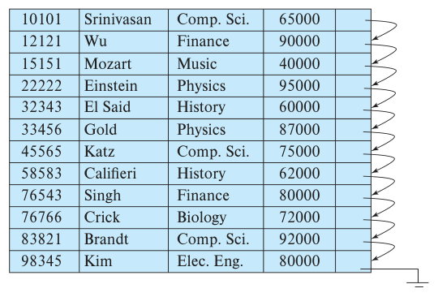
图14.1 instructor记录的顺序文件。
14.2.1 稠密索引与稀疏索引
索引项，也称索引记录，由搜索键值及指向一条或多条具有该搜索键值的记录的指针构成。记录指针包含磁盘块标识符和块内偏移量，用来定位块内记录。
有序索引有两种类型。
- 稠密索引：文件中每个搜索键值都有一个索引项。稠密聚簇索引的索引记录包含搜索键值，以及指向具有该值的第一条数据记录的指针。由于聚簇索引的记录按相同搜索键排序，其余同值记录顺序存放在第一条之后。
稠密非聚簇索引必须保存指向所有同值记录的指针列表。
- 稀疏索引：仅为部分搜索键值建立索引项。只有关系按搜索键排序保存，即索引为聚簇索引时，才能使用稀疏索引。与稠密索引一样，每个索引项包含搜索键值和指向该值第一条数据记录的指针。查找时，先找出搜索键值不大于目标值且尽可能大的索引项，从它指向的记录开始，沿文件中的指针访问，直到找到目标记录。
图14.2和图14.3分别是instructor文件的稠密索引和稀疏索引。假设查找ID为“22222”的教师。用图14.2的稠密索引，可以沿指针直接到达目标记录。ID是主键，因此仅有一条这样的记录，查找结束。用图14.3的稀疏索引时，找不到“22222”的索引项；数值顺序中，位于它之前的最后一个索引项是“10101”，因此先沿该指针定位，再顺序读取instructor文件，直到找到目标记录。
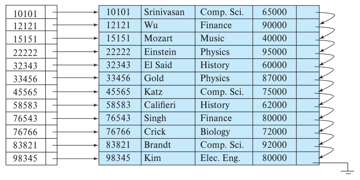
图14.2 稠密索引。
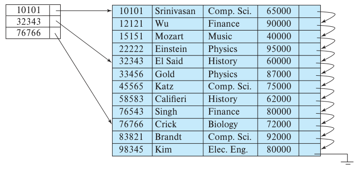
图14.3 稀疏索引。
以纸质词典为例，每页页眉列出该页按字母顺序排列的第一个词。把这些页眉词汇合在一起，就构成了词典正文的稀疏索引。
再看搜索键不是主键的例子。图14.4是instructor文件以dept_name为搜索键建立的稠密聚簇索引。此时文件按dept_name排序，未按ID排序；否则dept_name上的索引就应是非聚簇索引。假设要查找历史系记录。沿图14.4稠密索引中的指针，可以直接定位第一条History记录。处理该记录后，沿其指针找到dept_name顺序中的下一条记录，继续处理，直到遇到其他系的记录。
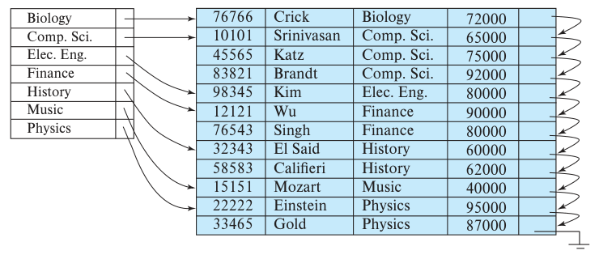
图14.4 以dept_name为搜索键的稠密索引。
〔译注：原图中Gold的ID为33465，前面各图为33456；此处保留原图数值。〕
一般而言，稠密索引定位记录更快，稀疏索引则占用空间更少，插入和删除时的维护开销也更低。
系统设计者必须在访问时间和空间开销之间权衡。具体选择取决于应用，不过，一种较好的折中是每个块设置一个稀疏索引项。处理数据库请求的主要成本是将块从磁盘读入主存；块一旦读入，扫描整个块的时间几乎可以忽略。利用这种稀疏索引，可以定位包含目标记录的块。因此，除非记录位于溢出块中，见13.3.2节，否则既能尽量减少块访问，也能使索引大小和空间开销尽可能小。
要使上述方法完全通用，还必须考虑同一搜索键值的记录占据多个块的情况。稍作修改就能处理这种情形。
14.2.2 多级索引
假设为包含100万个元组的关系建立稠密索引。索引项比数据记录小，假定一个4KB块能够容纳100个索引项，那么索引占10000个块。如果关系有1亿个元组，索引就占100万个块，即4GB。这样的索引作为顺序文件保存在磁盘上。
索引如果足够小，能够完全保留在主存中，查找索引项的时间就很短。如果无法全部保存在内存，就必须按需从磁盘读取索引块。即使索引小于机器主存，其他任务也需要内存，仍可能无法将其完整保留。此时查找一个索引项需要读取多个磁盘块。
可以在索引文件上使用二分查找，但成本仍然很高。若索引占b个块，二分查找最多需要读取⌈log₂b⌉个块；⌈x⌉表示不小于x的最小整数，即向上取整。读取的块不相邻，因此每次都需要随机，即非顺序I/O。对于10000块的索引，二分查找需要14次随机块读取。若磁盘随机读取平均耗时10毫秒，索引查找就需140毫秒。看起来时间不长，但单盘每秒只能完成约7次索引查找；后面将看到，更高效的机制可以完成更多次。若使用了溢出块，二分查找只能作用于非溢出块，实际成本可能高于上述对数界限。顺序查找需要b次顺序块读取，可能更慢；不过，在某些情况下，顺序读取成本较低，顺序查找也可能快于二分查找。总之，搜索大型索引可能很昂贵。
为解决这一问题，把索引视为普通顺序文件，在其上再建立一个稀疏的外层索引，原索引称为内层索引，如图14.5所示。索引项总是有序的，因此外层索引可以稀疏。查找时，先在外层索引中二分查找，找到不大于目标值且尽可能大的搜索键值。它的指针指向一个内层索引块。扫描该块，再找到不大于目标值且尽可能大的索引记录，它的指针指向包含目标记录的数据文件块。
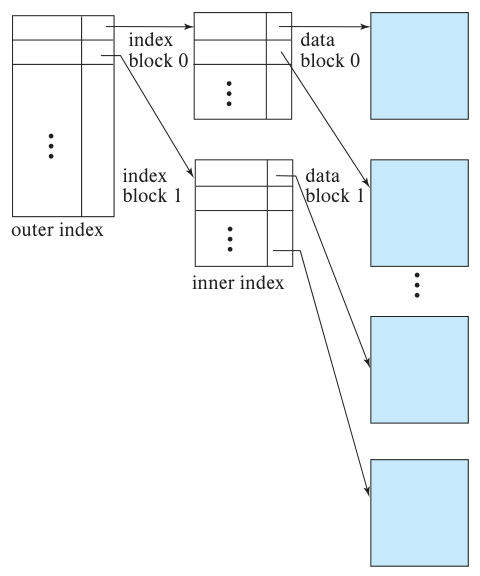
图14.5 两级稀疏索引。outer index为外层索引，inner index为内层索引，index block为索引块，data block为数据块。
在例子中，10000块的内层索引需要10000个外层索引项，只占100块。假设外层索引已经在主存中，多级索引每次查找只需读取1个索引块，二分查找则需14个。因此，每秒可以完成原来14倍的索引查找。
文件很大时，外层索引也可能大到无法放入主存。对于1亿个元组的关系，内层索引占100万个块，外层索引占10000块，即40MB。主存有许多用途，可能无法仅为这一个外层索引保留这么多空间。此时可以再增加一级索引，按需重复这一过程。具有两级或更多级的索引称为多级索引。通过多级索引查找记录，I/O次数明显少于二分查找。2
多级索引与树结构密切相关，例如用于内存索引的二叉树。14.3节将研究这种关系。
14.2.3 索引更新
无论采用什么索引形式，文件插入或删除记录时，每个索引都必须更新。修改记录时，如果更新影响某个索引的搜索键属性，该索引也必须更新。例如，教师所属系改变时，instructor的dept_name索引必须相应更新。记录更新可以视为先删除旧记录，再插入新值，相应地执行一次索引删除和一次索引插入。因此只需讨论索引的插入与删除，无须单独讨论更新。
先介绍单级索引的更新算法。
14.2.3.1 插入
系统先按待插入记录的搜索键值查找，接下来的操作取决于索引是稠密还是稀疏。
稠密索引：
- 如果搜索键值尚未出现在索引中，就在适当位置插入包含该值的索引项。
- 如果已经出现，则按以下情况处理。
a. 若索引项保存指向所有同值记录的指针，就把新记录的指针加入其中。
b. 若索引项只保存指向该值第一条记录的指针，就将新记录放在其他同值记录之后。
稀疏索引： 假设每个块有一个索引项。如果新建了一个块，就将新块中按搜索键顺序出现的第一个值插入索引。如果没有新建块，但新记录的搜索键值是该块最小的，就更新指向该块的索引项；否则无须修改索引。
14.2.3.2 删除
删除时，系统先定位待删除记录，之后的操作取决于索引是稠密还是稀疏。
稠密索引：
- 如果待删除记录是具有该搜索键值的唯一记录，就删除相应索引项。
- 否则，按以下情况处理。
a. 若索引项保存指向所有同值记录的指针，就删除其中指向该记录的指针。
b. 若索引项只指向该搜索键值的第一条记录，并且删除的正是第一条，就将索引项改为指向下一条记录。
稀疏索引：
- 如果索引中没有与待删除记录的搜索键值对应的索引项，无须修改索引。
- 否则，按以下情况处理。
a. 若待删除记录是该搜索键值的唯一记录，就用按搜索键顺序的下一个值的索引记录，替换当前索引记录。如果下一个值已有索引项，则直接删除当前项。
b. 否则，如果索引项指向待删除记录，就将它改为指向具有相同搜索键值的下一条记录。
多级索引的插入和删除是上述方法的简单扩展。系统先按上述方式更新最底层索引。对第二层而言，最底层索引只是一个记录文件；它发生变化时，再用同样方法更新第二层。如果还有更高层，也依次采用相同技术。
14.2.4 辅助索引
辅助索引必须是稠密的，每个搜索键值都有索引项，而且必须有指针指向文件中的每条记录。聚簇索引可以稀疏，只保存部分搜索键值，因为顺序访问文件的相应部分，就可以找到介于这些值之间的记录。辅助索引若只保存部分值，中间值对应的记录可能位于文件任意位置，通常必须扫描整个文件才能找到。
候选键上的辅助索引看起来与稠密聚簇索引相同，只是索引中相邻值指向的记录并不顺序存放。不过，辅助索引通常可能具有不同结构。聚簇索引的搜索键即使不是候选键，也只需指向某个值的第一条记录，因为顺序扫描就能读取其余同值记录。
辅助索引的搜索键如果不是候选键，只指向每个值的第一条记录就不够。文件按聚簇索引的搜索键排序，其他同值记录可能位于任意位置，因此辅助索引必须包含指向所有记录的指针。
如果关系允许多条记录具有相同的搜索键值，即被索引属性上的值可以重复，就称该搜索键为非唯一搜索键。
在非唯一搜索键上实现辅助索引的一种方法是：索引中的指针不直接指向记录，而指向一个桶，桶内再保存指向文件记录的指针。图14.6展示instructor文件在dept_name上采用这层间接寻址的辅助索引。
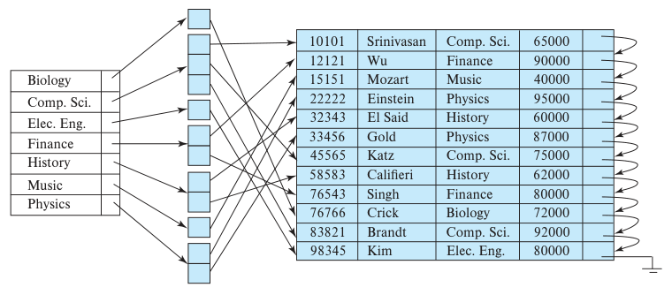
图14.6 instructor文件在非候选键dept_name上的辅助索引。
这种方法有一些缺点。首先，多一层间接寻址可能增加一次随机I/O，使索引访问变慢。其次，如果一个值很少重复或完全不重复，却为对应桶分配整个块，就会浪费大量空间。本章后面将介绍避免这些缺点的更高效辅助索引实现。
按聚簇索引顺序扫描很高效，因为文件记录的物理顺序与索引顺序相同。除了少数特殊情况，无法让一个文件同时按聚簇索引搜索键和辅助索引搜索键的顺序物理排列。按辅助搜索键顺序扫描时，读取每条记录都可能需要从磁盘读入一个新块，速度很慢。
前述插入和删除过程也适用于辅助索引，具体采用为每条记录保存指针的稠密索引操作。如果文件有多个索引，修改文件时每个索引都必须更新。
辅助索引可以改善使用其他搜索键的查询性能，但也显著增加数据库修改开销。设计者应根据查询与修改的相对频率，决定需要建立哪些辅助索引。
14.2.5 多属性索引
前面的搜索键示例都只有一个属性，但搜索键一般可以包含多个属性，称为复合搜索键。索引结构与其他索引相同，只是搜索键由属性列表组成。若被索引属性为A₁、…、Aₙ，搜索键就表示为值元组(a₁, …, aₙ)。
搜索键值按字典序排列。例如，两属性搜索键满足(a₁, a₂)＜(b₁, b₂)，当且仅当a₁＜b₁，或者a₁＝b₁且a₂＜b₂。字典序与单词按字母排序基本相同。
例如，在takes关系的复合搜索键(course_id, semester, year)上建立索引，可以查找某年某学期选修特定课程的全部学生。复合键上的有序索引还能够高效回答其他几类查询，见14.6.2节。
14.3 B⁺树索引文件
索引顺序文件的主要缺点是：文件增长时，索引查找与数据顺序扫描的性能都会下降。重新组织文件可以改善这一问题，但不宜频繁重组。
有些索引结构在数据插入和删除后仍能保持效率，其中使用最广泛的是B⁺树。B⁺树是一棵平衡树，从根到任意叶节点的路径长度都相同。对于某一棵树，n是固定值；除根之外，每个非叶节点有⌈n/2⌉到n个子节点，根有2到n个子节点。
后面会看到，B⁺树为插入和删除增加了性能开销，也需要额外空间。不过，它避免了文件重组成本，因此即使文件经常修改，这些开销也可以接受。此外，节点只有最少数量的子节点时，最多可能有一半空间未使用。考虑到B⁺树的性能收益，这部分空间开销同样可以接受。
14.3.1 B⁺树的结构
B⁺树是一种多级索引，但结构不同于多级索引顺序文件。暂时假设搜索键值不重复，即每个搜索键值唯一，最多出现在一条记录中。非唯一搜索键的问题将在后面讨论。
图14.7展示一个典型B⁺树节点，最多包含n−1个搜索键值K₁、K₂、…、Kn−1，以及n个指针P₁、P₂、…、Pₙ。节点中的搜索键值有序，因此i＜j时，Kᵢ＜Kⱼ。
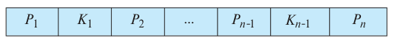
图14.7 B⁺树的典型节点。
先看叶节点。对于i＝1、2、…、n−1，指针Pᵢ指向搜索键值为Kᵢ的文件记录。Pₙ有特殊用途，稍后说明。
图14.8是instructor文件B⁺树的一个叶节点，取n＝4，搜索键为name。
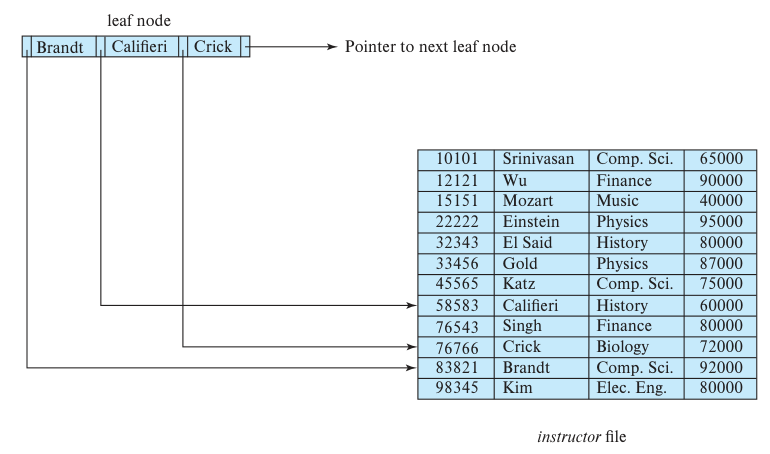
图14.8 instructor的B⁺树索引中的一个叶节点，n＝4。leaf node为叶节点，Pointer to next leaf node为指向下一个叶节点的指针，instructor file为数据文件。
了解叶节点结构后，再看搜索键值如何分配到各节点。每个叶节点最多保存n−1个值，最少可以保存⌈(n−1)/2⌉个值。在n＝4的例子中，每个叶节点至少有2个值，最多有3个。
若Lᵢ和Lⱼ是叶节点，且i＜j，即Lᵢ在树中位于Lⱼ左侧，那么Lᵢ中的每个搜索键值vᵢ都小于Lⱼ中的每个搜索键值vⱼ。
B⁺树索引通常用作稠密索引，此时每个搜索键值都必须出现在某个叶节点中。
现在可以说明Pₙ的用途。叶节点按其搜索键值具有线性顺序，Pₙ将它们按这个顺序串成链表，从而支持高效的文件顺序处理。
非叶节点构成叶节点上的多级稀疏索引。它们的结构与叶节点相同，只是所有指针都指向树节点。非叶节点最多保存n个指针，至少保存⌈n/2⌉个指针。节点中的指针数量称为扇出（fanout）。非叶节点也称内部节点。
考虑一个包含m个指针的节点，m≤n。对于i＝2、3、…、m−1，Pᵢ指向的子树包含大于等于Ki−1且小于Kᵢ的搜索键值。Pₘ指向搜索键值大于等于Km−1的子树，P₁指向搜索键值小于K₁的子树。
根与其他非叶节点不同，可以少于⌈n/2⌉个指针；不过，除非整棵树只有一个节点，否则根至少有2个指针。对任意n，都能构造满足这些要求的B⁺树。
图14.9展示instructor文件的一棵完整B⁺树，n＝4。为简洁起见，省略了空指针；图中没有箭头的指针字段都表示null。
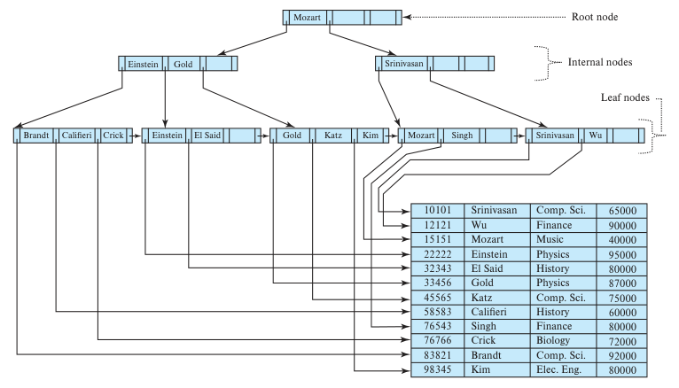
图14.9 instructor文件的B⁺树，n＝4。Root node为根节点，Internal nodes为内部节点，Leaf nodes为叶节点。
〔译注：图14.8和图14.9中，El Said的工资为80000，Califieri的工资为60000；前面各图分别为60000和62000。此处保留原图数值。〕
图14.10展示另一棵instructor B⁺树，这次n＝6。它的高度低于前面n＝4的树。
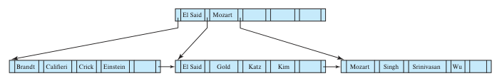
图14.10 instructor文件的B⁺树，n＝6。
这些B⁺树示例都是平衡的，即根到任意叶节点的路径长度相同。这是B⁺树的必要性质。B⁺树中的B代表balanced，即“平衡”。正是这种平衡性，保证了查找、插入和删除的良好性能。
一般来说，搜索键可能重复。一种处理非唯一搜索键的方法是修改树结构：某个搜索键在记录中出现多少次，就在叶节点中保存多少份，每份指向一条记录。此时，i＜j时Kᵢ＜Kⱼ的条件要改为Kᵢ≤Kⱼ。但这种方法会使内部节点中也出现重复搜索键，增加插入和删除过程的复杂度与成本。另一种方法是在每个搜索键值后保存一组记录指针，即前面介绍的桶。这种方法也较复杂，特别是某个值的记录指针很多时，访问可能低效。
大多数数据库采用以下办法使搜索键唯一。假设关系r希望建立索引的属性aᵢ不唯一，Aₚ为r的主键，就用唯一复合搜索键(aᵢ, Aₚ)建立索引。也可以用任何能与aᵢ一起保证唯一性的属性集代替Aₚ。例如，要在instructor.name上建立索引，可以改为在(name, ID)上建立，因为ID是instructor的主键。即使查询只使用name，也能通过这一索引高效处理，稍后会介绍。14.3.5节将更详细地讨论非唯一搜索键。
本章示例也在instructor.name等非唯一搜索键上建立索引，为简化说明，假设其中没有重复值。实际中，大多数数据库会自动在内部添加其他属性，保证不存在重复搜索键。
14.3.2 B⁺树上的查询
考虑如何在B⁺树上处理查询。假设要查找搜索键值为v的记录。图14.11给出find(v)函数的伪代码，假设不存在重复搜索键，即每个值最多对应一条记录。非唯一搜索键的问题将在本节后面讨论。
直观来说，函数从根开始向下遍历，直到到达可能包含目标值的叶节点。具体地，将根设为当前节点，然后重复以下步骤，直到到达叶节点：在当前节点中寻找满足Kᵢ≥v的最小i。如果找到，且Kᵢ＝v，就沿Pi＋1向下；若Kᵢ＞v，则沿Pᵢ向下。如果不存在这样的Kᵢ，说明v＞Km−1，其中Pₘ是节点最后一个非空指针，此时沿Pₘ向下。不断重复即可到达叶节点。
function find(v)
/* Assumes no duplicate keys, and returns pointer to the record with
* search key value v if such a record exists, and null otherwise */
Set C = root node
while (C is not a leaf node) begin
Let i = smallest number such that v ≤ C.K_i
if there is no such number i then begin
Let P_m = last non-null pointer in the node
Set C = C.P_m
end
else if (v = C.K_i) then Set C = C.P_(i+1)
else Set C = C.P_i /* v < C.K_i */
end
/* C is a leaf node */
if for some i, K_i = v
then return P_i
else return null; /* No record with key value v exists */
图14.11 查询B⁺树。
注释译文：假定键不重复；若有搜索键值为v的记录，返回其指针，否则返回null。C是叶节点。不存在键值为v的记录。
在叶节点中，如果存在Kᵢ＝v，Pᵢ就指向相应记录，函数返回Pᵢ。如果叶节点中没有值v，关系中就不存在搜索键值为v的记录，find返回null表示查找失败。
B⁺树还可查找搜索键值落在指定范围[lb, ub]内的所有记录。例如，在instructor.salary上建立B⁺树后，可以查找工资处于[50000, 100000]，即50000到100000之间的所有教师。这类查询称为范围查询。
图14.12的findRange(lb, ub)可执行此类查询。它先按类似find(lb)的方式下降到某个叶节点，该节点不一定实际包含lb。随后遍历该节点及后续叶节点，把满足lb≤C.Kᵢ≤ub的记录指针加入resultSet。遇到C.Kᵢ＞ub，或树中没有更多搜索键时，停止查找。
function findRange(lb, ub)
/* Returns all records with search key value V such that lb ≤ V ≤ ub. */
Set resultSet = {};
Set C = root node
while (C is not a leaf node) begin
Let i = smallest number such that lb ≤ C.K_i
if there is no such number i then begin
Let P_m = last non-null pointer in the node
Set C = C.P_m
end
else if (lb = C.K_i) then Set C = C.P_(i+1)
else Set C = C.P_i /* lb < C.K_i */
end
/* C is a leaf node */
Let i be the least value such that K_i ≥ lb
if there is no such i
then Set i = 1 + number of keys in C; /* To force move to next leaf */
Set done = false;
while (not done) begin
Let n = number of keys in C.
if (i ≤ n and C.K_i ≤ ub) then begin
Add C.P_i to resultSet
Set i = i + 1
end
else if (i ≤ n and C.K_i > ub)
then Set done = true;
else if (i > n and C.P_(n+1) is not null)
then Set C = C.P_(n+1), and i = 1 /* Move to next leaf */
else Set done = true; /* No more leaves to the right */
end
return resultSet;
图14.12 B⁺树上的范围查询。
注释译文：返回搜索键值V满足lb ≤ V ≤ ub的全部记录。C是叶节点。令流程转到下一叶节点；移动到下一叶节点；右侧已无更多叶节点。
〔译注：本算法中的n是当前叶节点的键数，下一叶指针写作P_(n+1)；前文固定容量节点的下一叶指针写作P_n。两处n的含义不同，使用这些记号时需要区分。〕
实际实现会为findRange提供迭代器接口，类似5.1.1节的JDBC ResultSet。接口提供next()方法，可反复调用以取得后续记录。next()按类似findRange的方式遍历叶层条目，但每次只前进一步，并记录当前位置，使后续调用继续访问后面的条目。这里省略细节，感兴趣的读者可以自行编写迭代器伪代码。
下面考虑B⁺树查询的成本。查询沿根到某个叶节点的一条路径进行。如果文件有N条记录，路径长度不超过⌈log⌈n/2⌉N⌉。
节点大小通常取为磁盘块大小，典型值为4KB。若搜索键占12字节、磁盘指针占8字节，n约为200。即使保守地假设搜索键占32字节，n仍约为100。取n＝100，若文件有100万个搜索键值，查找只需访问⌈log₅₀(1000000)⌉＝4个节点，即从根到叶最多读取4个磁盘块。根访问频繁，通常已经位于缓冲区，因此实际往往只需从磁盘读取3个或更少的块。
B⁺树与二叉树等内存树结构的一个重要区别，是节点大小及由此决定的树高。二叉树节点小，最多只有2个指针；B⁺树节点通常有一个磁盘块大，可以容纳很多指针。因此，B⁺树通常宽而矮，二叉树则窄而高。平衡二叉树的查找路径长度可达⌈log₂N⌉，其中N是被索引文件的记录数。N＝100万时，需要访问约20个节点。若每个节点位于不同磁盘块，就需20次块读取，B⁺树仅需4次。对于磁盘，这一差异很大，因为每次读取都可能寻道，寻道加读取约10毫秒。闪存读取一个4KB页约需10到100微秒，差异没那么悬殊，但仍很明显。
沿树到达叶层后，对唯一搜索键的单值查询，还需要一次随机I/O来取得匹配记录。
范围查询到达叶层后，还有读取范围内所有指针的成本。这些指针位于连续叶节点中。若需要M个指针，最多访问⌈M/(n/2)⌉＋1个叶节点，因为每个叶节点至少有n/2个指针，但即使只取两个指针，也可能跨越两页。此外，还要加上读取实际记录的成本。对于辅助索引，各记录可能位于不同块，最坏需要M次随机I/O。对于聚簇索引，这些记录位于连续块，每块包含多条记录，因此成本低得多。
再考虑非唯一搜索键。如前所述，若要为可能重复、并非候选键的属性aᵢ建立索引，可以添加主键等属性，构造无重复的复合搜索键。假设最终在(aᵢ, Aₚ)上建立索引。
如何利用该索引取出aᵢ等于v的全部元组？调用findRange(lb, ub)，令lb＝(v, −∞)、ub＝(v, ∞)即可，其中−∞和∞分别表示Aₚ可能取的最小值与最大值。这样会返回所有aᵢ＝v的记录。aᵢ上的范围查询也可类似处理。范围查询能够高效取得记录指针，实际记录的读取则可能像前面讨论的那样成本较高。
14.3.3 B⁺树的更新
关系插入或删除记录时，其索引必须相应更新。修改记录可以视为删除旧记录，再插入更新后的记录，因此这里只讨论插入与删除。
插入和删除比查找复杂，因为插入可能使节点过大，需要分裂；删除可能使节点过小，指针数少于⌈n/2⌉，需要合并节点。分裂或合并时，还必须保持树的平衡。为了先说明基本思路，暂时假设节点不会过大或过小，则操作如下。
- 插入：使用与图14.11的find()相同的方法，找到搜索键值应在的叶节点，再按顺序插入一个搜索键值与记录指针对，保持搜索键有序。
- 删除：按待删除记录的搜索键值查找，定位包含目标条目的叶节点。如果有多个相同搜索键值的条目，就搜索全部同值条目，直到找到指向待删除记录的那一项。删除该项后，将它右侧的所有条目左移一位，避免留下空隙。
下面讨论需要分裂和合并节点的一般情况。
14.3.3.1 插入
先看必须分裂节点的例子。假设instructor插入一条name为Adams的记录，需要将“Adams”索引项插入图14.9的B⁺树。查找算法确定，它应放入包含“Brandt”“Califieri”“Crick”的叶节点。但该叶已无空间，因此必须分裂为两个节点。图14.13展示分裂结果：一个叶节点保存“Adams”和“Brandt”，另一个保存“Califieri”和“Crick”。一般来说，将原有n−1个值与新插入值合计n个搜索键值排序，前⌈n/2⌉个留在原节点，其余放入新建节点。
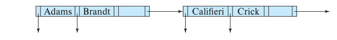
图14.13 插入“Adams”时分裂叶节点。
分裂叶节点后，必须将新节点加入B⁺树结构。例子中新节点的最小搜索键值为“Califieri”，需要将该值与指向新节点的指针插入原叶节点的父节点。图14.14展示结果。父节点有空间，因此无须继续分裂；若没有空间，父节点也必须分裂，并向祖父节点添加条目。最坏情况下，沿路径一直到根的所有节点都要分裂。如果根也分裂，整棵树就会增加一层。
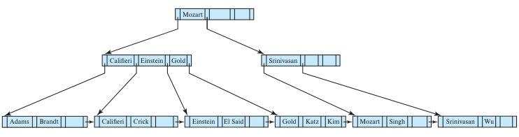
图14.14 向图14.9的B⁺树插入“Adams”。
非叶节点的分裂方式略有不同。图14.15展示向图14.14插入搜索键为“Lamport”的记录后的结果。目标叶节点已有“Gold”“Katz”“Kim”，必须分裂，右侧新节点保存“Kim”和“Lamport”。随后要向父节点插入(Kim, n₁)，n₁是指向新节点的指针。但父节点也已无空间，需要分裂。概念上先临时扩充父节点，加入新条目，再立即分裂这个过满节点。
分裂过满非叶节点时，将子指针分配到原节点和新节点。本例中，前3个指针留在原节点，其余2个进入右侧新节点。搜索键值的处理略有不同：位于右移指针之间的值，本例为“Kim”，随指针一起移动；位于保留在左侧的指针之间的值，本例为“Califieri”和“Einstein”，留在原处。
位于左右两组指针之间的搜索键值，则采用另一种处理。本例中，“Gold”分隔左侧3个指针和右侧2个指针。它不留在任何一个分裂后的节点中，而是将(Gold, n₂)插入父节点，n₂指向新建的右侧节点。这里的父节点是根，仍有足够空间。
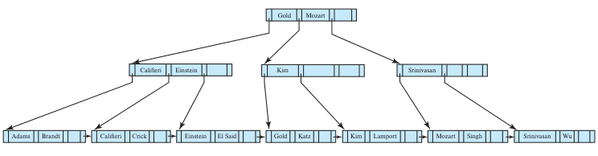
图14.15 向图14.14的B⁺树插入“Lamport”。
B⁺树插入的一般方法是先确定目标叶节点l。如果发生分裂，就将新节点插入l的父节点。如果这又引发分裂，继续向上递归，直到某次插入不再引发分裂，或创建了新根。
procedure insert(value K, pointer P)
if (tree is empty) create an empty leaf node L, which is also the root
else Find the leaf node L that should contain key value K
if (L has less than n − 1 key values)
then insert_in_leaf(L, K, P)
else begin /* L has n − 1 key values already, split it */
Create node L′
Copy L.P_1 … L.K_(n−1) to a block of memory T that can
hold n (pointer, key-value) pairs
insert_in_leaf(T, K, P)
Set L′.P_n = L.P_n; Set L.P_n = L′
Erase L.P_1 through L.K_(n−1) from L
Copy T.P_1 through T.K_⌈n/2⌉ from T into L starting at L.P_1
Copy T.P_(⌈n/2⌉+1) through T.K_n from T into L′ starting at L′.P_1
Let K′ be the smallest key-value in L′
insert_in_parent(L, K′, L′)
end
图14.16 向B⁺树插入条目。
注释译文：L已经有n−1个键值，将其分裂。
图14.16概述插入算法。insert将键值与指针对插入索引，并使用图14.17的两个辅助过程insert_in_leaf与insert_in_parent。伪代码中的L、N、P、T均表示节点指针，其中L专用于叶节点。L.Kᵢ与L.Pᵢ分别表示节点L的第i个值和指针，T.Kᵢ与T.Pᵢ同理。parent(N)用于取得N的父节点。在最初查找叶节点时，可以记录根到叶的路径节点列表，之后就能高效找到路径中任一节点的父节点。
procedure insert_in_leaf(node L, value K, pointer P)
if (K < L.K_1)
then insert P, K into L just before L.P_1
else begin
Let K_i be the highest value in L that is less than or equal to K
Insert P, K into L just after L.K_i
end
procedure insert_in_parent(node N, value K′, node N′)
if (N is the root of the tree)
then begin
Create a new node R containing N, K′, N′
/* N and N′ are pointers */
Make R the root of the tree
return
end
Let P = parent(N)
if (P has less than n pointers)
then insert (K′, N′) in P just after N
else begin /* Split P */
Copy P to a block of memory T that can hold P and (K′, N′)
Insert (K′, N′) into T just after N
Erase all entries from P; Create node P′
Copy T.P_1 … T.P_⌈(n+1)/2⌉ into P
Let K′′ = T.K_⌈(n+1)/2⌉
Copy T.P_(⌈(n+1)/2⌉+1) … T.P_(n+1) into P′
insert_in_parent(P, K′′, P′)
end
图14.17 B⁺树插入的辅助过程。
注释译文：N和N′是指针；分裂P。
insert_in_parent的参数为N、K′、N′，表示原节点N分裂为N与N′，K′为N′中的最小值。该过程修改N的父节点，记录此次分裂。insert_into_index与insert_in_parent使用临时内存T保存待分裂节点的内容。也可以修改算法，将数据直接从原节点复制到新节点，减少复制时间；不过，临时空间T使过程更简单。
译注：原书此段称主插入过程为insert_into_index，图14.16中的实际名称为insert。正文和伪代码分别保留原名。
14.3.3.2 删除
下面考虑删除导致节点指针过少的情况。先从图14.14中删除“Srinivasan”，结果如图14.18。用查找算法定位相应条目并删除后，叶节点只剩“Wu”。本例n＝4，1＜⌈(n−1)/2⌉，因此必须与兄弟节点合并，或在兄弟间重新分配条目，保证每个节点至少半满。这里可以与左兄弟合并：将两个节点的条目都移入左兄弟，删除变空的右兄弟，再删除父节点中指向被删节点的条目。
本例需从父节点删除(Srinivasan, n₃)，n₃指向原先包含“Srinivasan”的叶节点。这里非叶节点删除的值恰巧与叶节点删除的值相同，多数删除并非如此。父节点原有搜索键“Srinivasan”和2个指针，删除后只剩最左边的1个指针，不再包含搜索键值。n＝4时，1＜⌈n/2⌉，因此父节点也不足半满。n更大时，不足半满的节点仍可能包含一些值和指针。
此时检查兄弟节点。本例唯一的兄弟是包含“Califieri”“Einstein”“Gold”的非叶节点。如果可能，优先合并。但两节点共5个指针，超过最多4个的限制，无法合并。于是重新分配指针，使每个节点至少有⌈n/2⌉＝2个子指针。将左兄弟最右侧、指向“Gold”叶节点的指针，移到不足半满的右兄弟。右兄弟此时有原先的最左指针与新移入的指针，却缺少分隔它们的值。这个分隔值实际上不在两个兄弟中，而在父节点连接它们的两个指针之间。本例为“Mozart”，重新分配后应放入右兄弟。同时，父节点中的“Mozart”已无法正确分隔这两个兄弟的搜索键；新的分隔值应是重新分配前位于左兄弟的“Gold”。
因此，图14.18中重新分配指针后，“Gold”上移到父节点，原来位于父节点的“Mozart”下移到右兄弟。
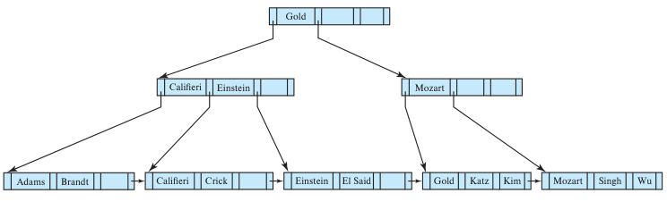
图14.18 从图14.14的B⁺树中删除“Srinivasan”。
接着从图14.18依次删除“Singh”和“Wu”，结果如图14.19。删除第一个值时，叶节点仍满足最小占用要求；删除第二个值时则不足。它无法与兄弟合并，因此重新分配，将“Kim”移入包含“Mozart”的节点。父节点中分隔两兄弟的值也从“Mozart”改为“Kim”。
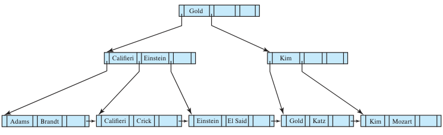
图14.19 从图14.18的B⁺树中删除“Singh”和“Wu”。
再删除“Gold”，结果如图14.20。叶节点不足半满，这次能够与兄弟合并。合并后，从其父节点，即包含“Kim”的非叶节点中删除一个条目，使父节点只剩1个指针，也不足半满。这次父节点可以与兄弟合并，父节点之上的分隔值“Gold”随之下移到合并后的节点。合并还会从更上一层的父节点，也就是根中删除一个条目。根因此只剩一个子指针，没有搜索键，违反了根至少有两个子节点的要求。删除旧根，让唯一的子节点成为新根，B⁺树的深度就减少1。
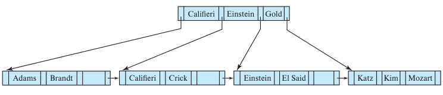
图14.20 从图14.19的B⁺树中删除“Gold”。
删除后，B⁺树非叶节点中的某个值可能不再出现在任何叶节点中。例如图14.20中的“Gold”已从叶层删除，却仍保留在非叶节点。
一般而言，删除时先查找到目标值并删除它。如果节点过小，就从父节点中移除相应节点。这会使删除算法向上递归，直到到达根、某个父节点删除后仍满足占用要求，或者采用重新分配为止。
图14.21概述删除伪代码。swap_variables(N, N′)只交换两个指针变量的值，不改变树本身。“值或指针过少”对非叶节点表示指针少于⌈n/2⌉，对叶节点表示值少于⌈(n−1)/2⌉。伪代码通过从相邻节点借一个条目重新分配，也可以将两个节点的条目重新均分。删除条目(K, P)时需要注意：叶节点的指针在键值之前，即P位于K前面；非叶节点中，P位于K后面。
procedure delete(value K, pointer P)
find the leaf node L that contains (K, P)
delete_entry(L, K, P)
procedure delete_entry(node N, value K, pointer P)
delete (K, P) from N
if (N is the root and N has only one remaining child)
then make the child of N the new root of the tree and delete N
else if (N has too few values/pointers) then begin
Let N′ be the previous or next child of parent(N)
Let K′ be the value between pointers N and N′ in parent(N)
if (entries in N and N′ can fit in a single node)
then begin /* Coalesce nodes */
if (N is a predecessor of N′) then swap_variables(N, N′)
if (N is not a leaf)
then append K′ and all pointers and values in N to N′
else append all (K_i, P_i) pairs in N to N′;
set N′.P_n = N.P_n
delete_entry(parent(N), K′, N); delete node N
end
else begin /* Redistribution: borrow an entry from N′ */
if (N′ is a predecessor of N) then begin
if (N is a nonleaf node) then begin
let m be such that N′.P_m is the last pointer in N′
remove (N′.K_(m−1), N′.P_m) from N′
insert (N′.P_m, K′) as the first pointer and value in N,
by shifting other pointers and values right
replace K′ in parent(N) by N′.K_(m−1)
end
else begin
let m be such that (N′.P_m, N′.K_m) is the last pointer/value
pair in N′
remove (N′.P_m, N′.K_m) from N′
insert (N′.P_m, N′.K_m) as the first pointer and value in N,
by shifting other pointers and values right
replace K′ in parent(N) by N′.K_m
end
end
else … symmetric to the then case …
end
end
图14.21 从B⁺树删除条目。最后的else分支与前述分支对称，原书以省略形式表示。
注释译文：合并节点；重新分配，从N′借一个条目。
14.3.4 B⁺树更新的复杂度
虽然B⁺树插入和删除过程复杂，但需要的I/O较少。I/O成本很高，这是一个重要优势。可以证明，最坏情况下，一次插入所需I/O次数与log⌈n/2⌉N成正比，其中n是节点最大指针数，N是被索引文件的记录数。
搜索键不重复时，删除的最坏复杂度同样与log⌈n/2⌉N成正比。非唯一搜索键将在后面讨论。
也就是说，插入和删除的I/O成本与B⁺树高度成正比，因此很低。操作速度快，使B⁺树成为数据库中常用的索引结构。
实践中的I/O次数通常低于最坏界限。扇出为100，且叶节点访问均匀分布时，叶节点的父节点被访问的概率是该叶的100倍。相应地，非叶节点总数只略多于叶节点数的1/100。如今数GB内存很常见，即使关系很大，经常使用的B⁺树大部分非叶节点也很可能已在数据库缓冲区中。因此，一次查找通常只需1到2次I/O。更新时，节点分裂概率也很小：扇出为100，根据插入顺序不同，每50到100次插入才有一次分裂，需要写入多个块。平均而言，一次插入用于写回更新块的I/O次数仅略多于1次。
B⁺树虽然只保证节点至少半满，但随机顺序插入时，节点平均占用率通常超过三分之二。按排序顺序插入时，节点则只有半满。为什么后一种情况只有半满，留给读者思考。
14.3.5 非唯一搜索键
前面一直假设搜索键唯一。14.3.1节已经说明，可以把原搜索键与额外属性组成复合搜索键，使其在全部记录中唯一。
额外属性可以是记录ID，即记录指针，也可以是主键，或任何在同一搜索键值的记录之间保持唯一的其他属性。这种额外属性称为唯一化属性（uniquifier attribute）。
使用原搜索键属性查询，可以采用14.3.2节的范围查找；也可以修改findRange，只接收原搜索键值作为参数，并在比较时忽略唯一化属性。
也可以修改B⁺树结构，直接支持重复搜索键，不过插入、删除和查找方法都需要相应修改。
- 一种方法是每个搜索键值只在树中保存一次，并关联一个记录指针桶或列表。它节省空间，但实现较复杂。如果桶放在叶节点内，需要额外代码处理变长桶，以及桶大于叶节点的情况；如果桶放在独立块中，获取记录时可能多一次I/O。
- 另一种方法是每条记录都保存一份搜索键值。叶节点满时仍可按通常方式分裂，但不同叶节点可能包含相同搜索键，显著增加内部节点分裂和搜索的复杂度。由于值按出现次数重复保存，空间开销也更高。
与唯一搜索键方法相比，这两种方式的一大问题是删除效率，三种方式的查找和插入复杂度则相同。若某值重复很多次，要删除其中一条记录，可能需要搜索大量同值条目，甚至跨越多个叶节点，才能找到指向该记录的条目。最坏删除复杂度可能与记录数呈线性关系。
唯一搜索键方法可以高效删除。根据待删除记录计算复合搜索键，再查询索引；由于值唯一，只需从根到叶遍历一次，就能定位对应叶层条目，无须在叶层继续访问。删除的最坏成本与记录数的对数成正比。
由于重复搜索键带来的删除低效及其他复杂性，大多数数据库的B⁺树实现只处理唯一搜索键，并自动添加记录ID等属性，使原本非唯一的搜索键变得唯一。
14.4 B⁺树扩展
本节介绍B⁺树索引结构的几种扩展与变体。
14.4.1 B⁺树文件组织
如14.3节所述，索引顺序文件的主要缺点是文件增长后性能下降：越来越多的索引项和实际记录脱离顺序，保存在溢出块中。B⁺树索引解决了索引查找性能下降的问题。
实际记录的存储也可以利用B⁺树叶层组织，解决性能下降问题。此时，B⁺树既作为索引，又负责组织文件记录。在B⁺树文件组织中，叶节点直接保存记录，而非记录指针，如图14.22。记录通常大于指针，因此叶节点可容纳的最大记录数，小于非叶节点可容纳的指针数；不过，叶节点仍要求至少半满。
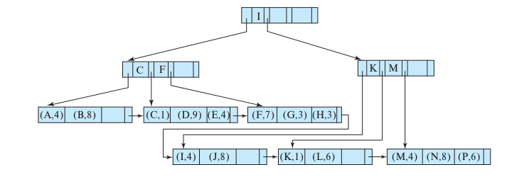
图14.22 B⁺树文件组织。
这种文件组织的记录插入和删除，与B⁺树索引条目的插入和删除相同。插入键值v的记录时，在树中查找不大于v的最大键值，定位记录应在的块。如果空间足够，就存入记录；否则将块分裂为两个，并按搜索键顺序重新分配记录，为新记录腾出空间。分裂按通常方式向上传播。删除时，先从所在块移除记录。如果块B因此不足半满，就与相邻块B′重新分配记录。假定记录定长，每块至少容纳最大记录数的一半，非叶节点也按通常方式更新。
B⁺树用于文件组织时，空间利用率尤其重要，因为记录占用的空间可能远大于键和指针。分裂和合并时，让更多兄弟节点参与重新分配，可以提高利用率。此技术适用于叶节点和非叶节点，方法如下。
插入时若节点已满，先尝试将部分条目移到相邻节点，为新条目腾出空间。若相邻节点也满，无法这样做，就分裂当前节点，再将条目均分给一个相邻节点和分裂产生的两个节点。这3个节点的条目总数比2个节点能容纳的数量多1，因此每个节点约为三分之二满。更精确地说，每个节点至少有⌊2n/3⌋个条目，其中n是节点可容纳的最大条目数。⌊x⌋表示不大于x的最大整数，即舍去小数部分。
删除时，如果占用率降到⌊2n/3⌋以下，尝试从某个兄弟节点借一个条目。如果两个兄弟都恰好有⌊2n/3⌋条记录，就将当前节点和两个兄弟的条目均分到其中两个节点，删除第三个。可行的原因是，总条目数3⌊2n/3⌋−1小于2n。若使用3个相邻节点参与重新分配，可以保证每个节点有⌊3n/4⌋个条目。一般而言，若共m个节点，即m−1个兄弟，参与重新分配，可以保证每个节点至少有⌊(m−1)n/m⌋个条目。不过，参与的兄弟越多，更新成本越高。
B⁺树索引或文件组织中，树上相邻的叶节点在磁盘上可能相距很远。刚基于一组记录建立文件组织时，可以为树中连续叶节点分配磁盘上大致连续的块，使叶层顺序扫描也大致对应磁盘顺序扫描。随着插入和删除发生，顺序性逐渐丧失，顺序访问越来越频繁地等待寻道，可能需要重建索引来恢复顺序性。
B⁺树文件组织也可保存SQL clob和blob等大对象。这些对象可能超过一个磁盘块，甚至达到数GB。可以将对象划分为较小记录的序列，用B⁺树文件组织保存。记录可以按顺序编号，或以其在对象中的字节偏移量编号，再用该编号作为搜索键。
14.4.2 辅助索引与记录迁移
B⁺树等文件组织即使没有更新记录内容，也可能改变记录位置。例如，叶节点分裂会把许多记录移到新节点。这时，保存这些记录指针的所有辅助索引都必须更新，即使记录值没有变化。一个叶节点可能有相当多记录，每条记录的索引项又可能分散在各辅助索引的不同位置。因此，一次叶节点分裂可能需要几十乃至几百次I/O更新所有受影响的辅助索引，成本很高。
常用解决办法是在辅助索引中保存主索引搜索键的属性值，用它代替记录指针。例如，instructor在ID上有主索引，则dept_name辅助索引为每个系名保存对应教师ID的列表，无须保存直接指向记录的指针。
这样，叶节点分裂引起记录迁移时，无须更新这些辅助索引。不过，通过辅助索引定位记录需要两步：先查辅助索引得到主索引搜索键值，再查主索引取得实际记录。
这种方法显著降低了文件重组引起的索引更新成本，同时增加了辅助索引的数据访问成本。
14.4.3 字符串索引
为字符串属性建立B⁺树有两个问题：字符串长度可变；字符串还可能很长，导致扇出降低、树高增加。
搜索键变长时，即使节点都已满，扇出也可能不同。因此，无论已有多少索引项，只要没有空间加入新项，就必须分裂。合并或重新分配也应依据空间占用比例，而非节点能容纳的最大条目数。
前缀压缩（prefix compression）可以增大扇出。非叶节点只保存足以区分两侧子树键值的搜索键前缀，无须保存完整值。例如，姓名索引的非叶节点可以只保存姓名前缀。若它分隔的两棵子树中最接近的值分别为“Silas”和“Silver”，保存“Silb”就足够，无须保存完整的“Silberschatz”。
14.4.4 B⁺树索引的批量装载
前面看到，一次B⁺树插入所需I/O次数，在最坏情况下与树高成正比。树高通常很小，即使关系很大，通常也不超过5。
现在考虑在大型关系上构建B⁺树。假设关系明显大于主存，准备建立的非聚簇索引也大于主存。扫描关系并逐项插入时，由于条目没有特定顺序，每次访问的叶节点很可能不在缓冲区中。随机访问使每次向叶节点添加条目都需要寻道，读入所在块；再次向同一块插入前，该块可能已被驱逐，写回时又需要寻道。于是，每个插入条目可能需要一次随机读和一次随机写。
例如，关系有1亿条记录，磁盘每次I/O约10毫秒，仅计算读取叶节点、不计写回更新节点的成本，构建索引就至少需要100万秒。相比之下，每条记录100字节，磁盘子系统每秒传输50MB，读取整个关系仅需200秒。
一次向索引插入大量条目，称为索引批量装载（bulk loading）。高效方法是先创建包含关系索引项的临时文件，按目标索引的搜索键排序，再扫描有序文件，将条目插入索引。15.4节将介绍高效的大型关系排序算法；只要有合理数量的主存，即使文件很大，其排序I/O成本也可以与读取文件数遍相当。
先排序再插入B⁺树有显著收益。属于同一叶节点的条目会连续出现，叶节点只需写出一次；如果B⁺树最初为空，装载期间根本不必从磁盘读回节点。因此，即使一个叶节点插入很多条目，也只产生一次I/O。若每叶100个条目，叶层共有100万个节点，构建叶层只需100万次I/O。如果连续叶节点分配到连续磁盘块，这些I/O还可以是顺序的，只需很少寻道。对于基本顺序的磁盘I/O，每块1毫秒是合理估计；随机I/O则约为每块10毫秒。
15.4节将进一步研究排序成本。粗略估计，原本在磁盘上需要多达100万秒构建的索引，先排序再插入B⁺树后，可以在远少于1000秒的时间内完成。
如果B⁺树最初为空，还可以从叶层自底向上构建，进一步加快速度。先按前述方法排序，再把有序条目划分到块，每块尽量装满；这些块形成叶层。用每块的最小值和块指针构造上一层条目，指向叶块。继续用下一层各节点的最小值构建更高层，直到创建根。具体细节留给读者练习。
大多数数据库在为关系创建索引时，采用基于排序和自底向上构建的高效技术；在已有索引的关系中逐条添加元组时，则使用普通插入过程。有些数据库建议，一次向已有关系加入大量元组时，可以先删除除主键索引以外的索引，插入完成后再重建，利用高效批量装载技术。
14.4.5 B树索引文件
B树与B⁺树索引相似，主要区别是B树消除了搜索键值的冗余存储。图14.9的B⁺树中，“Einstein”“Gold”“Mozart”“Srinivasan”既出现在叶节点，也出现在非叶节点。每个搜索键值都出现在某个叶节点，其中部分又在非叶节点重复。
B树中，唯一搜索键值只出现一次。图14.23给出与图14.9包含同一组搜索键的B树。由于搜索键不重复，B树可能用更少节点保存索引。不过，非叶节点中的值不再出现在其他地方，因此每个非叶搜索键必须额外保存一个指针，指向对应文件记录或记录桶。
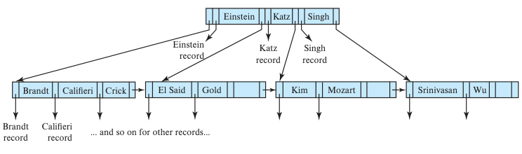
图14.23 与图14.9的B⁺树对应的B树。record表示相应记录，其余记录指针依此类推。
许多数据库手册、行业文章和从业者用“B树”指本书所称的B⁺树。实际上，在当今用法中，B树通常被当作B⁺树的同义词。本书沿用两者最初的定义，以免混淆这两种数据结构。
图14.24a展示一般形式的B树叶节点，图14.24b展示非叶节点。叶节点与B⁺树相同。非叶节点中，Pᵢ是与B⁺树相同的树指针，Bᵢ则指向桶或文件记录。图中叶节点有n−1个键，非叶节点有m−1个键，因为非叶节点额外保存Bᵢ，能容纳的搜索键更少。显然m＜n，具体关系取决于搜索键和指针的大小。
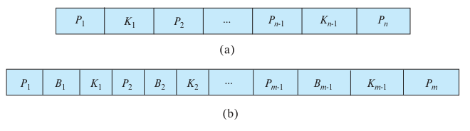
图14.24 B树的典型节点。（a）叶节点；（b）非叶节点。
B树查找访问的节点数取决于搜索键所在位置。B⁺树必须从根走到叶，B树有时在到达叶层前就能找到目标。不过，B树叶层保存的键大约是非叶层的n倍，n通常很大，因此提前找到部分值的收益较小。此外，B树非叶节点容纳的搜索键更少，扇出低于B⁺树，可能使树更深。B树对某些键查找更快，对另一些更慢，总体查找时间仍与搜索键数量的对数成正比。
B树删除更复杂。B⁺树待删除条目总在叶节点，B树中却可能在非叶节点，需要从其子树选择适当值替换。具体来说，删除Kᵢ时，要将Pi＋1子树中的最小搜索键移到原Kᵢ的位置。如果原来保存该值的叶节点条目过少，还需进一步处理。B树插入则只比B⁺树略复杂。
对于大型索引，B树的空间优势有限，通常不足以抵消上述缺点。因此，几乎所有数据库实现都采用B⁺树结构，即使名称仍写作B树。
14.4.6 闪存上的索引
此前介绍索引时，假设数据保存在磁盘。虽然多数情况下仍如此，但闪存容量显著增长，每GB成本相应下降，基于闪存的SSD已经在许多应用中替代磁盘。
标准B⁺树也可用于SSD，更新性能可以接受，查找性能则明显优于磁盘。
闪存按页组织，基于闪存的SSD可以使用B⁺树。SSD随机页读取只需约20到100微秒，磁盘则需5到10毫秒，因此SSD上的查找快得多。
闪存写性能更复杂。它在物理层不允许原地更新，虽然逻辑上看起来可以。每次更新都变成整页的复制加写入，旧页稍后再擦除。写新页需要20到100微秒，但最终必须擦除旧页，为后续写入释放空间。擦除以包含多个页的块为单位，一次块擦除需要2到5毫秒。
闪存页比磁盘块小，因此适合闪存的B⁺树节点也更小。让节点大小匹配闪存页是合理的，否则更新较大节点时要写多个页。小页使树更高、访问数据所需I/O更多，但闪存随机读取快得多，对整体读取性能的影响仍较小。
SSD随机I/O虽比磁盘便宜很多，批量装载仍明显优于逐元组插入。尤其是自底向上构建，即使输入已按搜索键排序，也比逐项插入减少了页写入。闪存页不能原地写入，还会在稍后引起昂贵的块擦除，因此减少写页带来的性能收益显著。
已有多种面向闪存的B⁺树扩展和替代方案，主要目标是减少页重写引起的擦除。一种方法是在内部节点增加缓冲区，将更新暂存于较高层，延迟向下传递；修改某页时合并执行多次更新，降低每次更新的写页次数。另一种方法建立多棵树并合并，日志结构合并树及其变体采用这一思路。这两类方法也有助于降低磁盘写入成本，14.8节将概述。
14.4.7 主存中的索引
当今主存容量大、价格较低，许多组织能够购置足够内存，容纳全部业务数据。B⁺树无须改变结构即可索引内存数据，不过仍有优化空间。
首先，内存比磁盘昂贵，内存数据库的数据结构应尽量减少空间需求。14.4.1节提高B⁺树空间利用率的技术，也适用于降低内存B⁺树的占用。
内存数据可以接受需要遍历多个指针的数据结构。磁盘中跨越多个页的I/O成本很高，因此不适合这样做。内存数据库的树结构可以比典型B⁺树更深。
高速缓存与主存存在速度差异，且以通常约64字节的高速缓存行为单位传输数据，使两者关系有些类似于主存和磁盘，只是速度差距更小。读取已在缓存中的位置，CPU只需1到2纳秒；缓存未命中、需要访问主存时，约延迟50到100纳秒。
节点小到能够装入一个缓存行的B⁺树，处理内存数据时性能很好。每次节点访问都可能导致缓存未命中，因此，与二叉树等又高又窄的结构相比，它完成索引操作时的缓存未命中次数少得多。大节点B⁺树也往往不及这种小节点结构：节点内部定位需要扫描跨越多个缓存行的内容，或进行二分查找，两者都可能引起多次缓存未命中。
如果数据库无法全部放入内存，但常用数据往往驻留内存，可以让B⁺树同时适应磁盘与内存访问：对外采用大节点优化磁盘访问，节点内部则不使用单个大键值与指针数组，而组织成小节点大小匹配缓存行的树。在大B⁺树节点内，通过这棵小树定位，代替线性扫描或二分查找，从而减少缓存未命中。
14.5 散列索引
散列广泛用于建立内存索引。这种索引可以为处理连接而临时创建，见15.5.5节，也可以作为内存数据库的永久结构。散列还可用于组织文件记录，不过散列文件组织并不常见。我们先讨论内存散列索引，再讨论磁盘散列。
这里用“桶”表示可以保存一条或多条记录的存储单位。内存散列索引的桶可以是索引项或记录的链表；磁盘索引的桶可以是磁盘块链表。散列文件组织的桶直接保存实际记录，这种结构只适用于磁盘驻留数据。下面的讨论既适用于桶保存记录指针，也适用于桶保存实际记录。
形式化地，K表示全部搜索键值的集合，B表示全部桶地址的集合，散列函数h是从K到B的函数。内存散列索引中的桶集合可以用指针数组表示，第i个桶位于偏移i，每个指针保存相应桶内条目链表的头指针。
插入搜索键为Kᵢ的记录时，先计算h(Kᵢ)，得到目标桶地址，再将记录的索引项加入相应位置的链表。其他散列变体对同桶多条记录有不同处理，这里介绍的是最常用的溢出链（overflow chaining）方法。
采用溢出链的散列索引也称封闭寻址（closed addressing），较少见的名称是封封闭散列（closed hashing）。另一种称为开放寻址（open addressing）的方法用于某些应用，但它不能高效支持删除，不适合大多数数据库索引场景，这里不再介绍。
散列索引高效支持搜索键等值查询。查找Kᵢ时，只需计算h(Kᵢ)，再搜索该地址的桶。如果K₅和K₇具有相同散列值，即h(K₅)＝h(K₇)，那么查找K₅时，桶内可能同时有K₅和K₇的记录。因此，必须检查桶中每条记录的搜索键，确认是否为目标记录。
散列索引不支持B⁺树那样的范围查询，例如不能高效返回所有满足l≤v≤u的搜索键值。
删除同样直接：若待删记录的搜索键为Kᵢ，先计算h(Kᵢ)，再到对应桶找到并删除该记录。桶采用链表时，删除很容易实现。
磁盘散列索引插入时，也先根据搜索键计算散列，找到桶。如果桶有空间，就存入记录；如果空间不足，称为桶溢出。此时使用溢出桶：向已满的桶b插入时，为b分配一个溢出桶，并把记录存入其中；溢出桶也满时，再分配下一个。一个桶的所有溢出桶连接成链表，如图14.25。采用溢出链后，查找搜索键k不仅要搜索h(k)，还要搜索它连接的全部溢出桶。
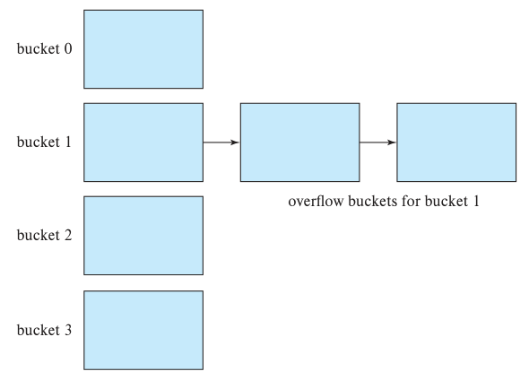
图14.25 磁盘散列结构中的溢出链。bucket 0至bucket 3为桶0至桶3，右侧为桶1的溢出桶。
桶数不足以容纳给定记录数时，会发生溢出。若提前知道记录数量，可以分配所需桶数；记录数明显超过预期时如何处理，稍后介绍。各桶分配到的记录不均匀时，也可能出现某桶溢出、其他桶仍有很多空闲空间的情况。
多条记录具有相同搜索键时，可能出现分布倾斜。即使每个搜索键只有一条记录，散列函数分布不均也会造成倾斜。谨慎选择函数，使键在桶间均匀、随机分布，可以降低这一风险，但仍可能有一定倾斜。
为降低溢出概率，桶数通常取(nᵣ/fᵣ)×(1＋d)，nᵣ为记录数，fᵣ为每桶可容纳记录数，d为余量系数，典型值约0.2。取0.2时，桶空间约有20%闲置，代价换来了较低的溢出概率。
即使预留了额外桶，仍可能溢出，特别是记录数超出最初预期时。
创建索引时固定桶数量的上述方法，称为静态散列。它要求预先知道将存储多少记录。随着大量记录加入，记录数远多于桶数时，查找必须检查同桶或若干溢出桶中的大量记录，效率下降。
可以增加桶数并重建索引来解决。例如，记录数达到桶数的两倍时，将桶数翻倍重建。但关系很大时，重建耗时长，会打断正常处理。为此，人们提出逐步增加桶数的动态散列技术，包括线性散列和可扩展散列，详见24.5节。
14.6 多键访问
此前隐含假设处理一个关系查询时，只使用单个属性上的一个索引。但某些查询适合同时使用多个已有索引，或使用建立在多属性搜索键上的索引。
14.6.1 使用多个单键索引
假设instructor在dept_name和salary上各有一个索引。要查找金融系工资为80000美元的所有教师，可以写：
select ID
from instructor
where dept_name = 'Finance' and salary = 80000;
有3种处理策略：
- 用dept_name索引找到金融系所有记录，再逐条检查salary是否为80000。
- 用salary索引找到工资为80000美元的所有教师，再逐条检查系名是否为“Finance”。
- 用dept_name索引得到金融系记录的全部指针，再用salary索引得到工资为80000美元的全部记录指针，求两组指针的交集。交集对应同时满足这两个条件的记录。
只有第三种策略利用了多个索引。不过，如果以下条件同时满足，它也可能不理想：
- 金融系记录很多。
- 工资为80000美元的教师记录很多。
- 同时满足两个条件的记录很少。
此时必须扫描大量指针，才能得到很小的结果。某些情况下，位图索引能够显著加快第三种策略中的交集运算，14.9节将概述这种结构。
14.6.2 多属性索引
另一种策略是在复合搜索键(dept_name, salary)上建立索引，即搜索键由系名与工资连接组成。
使用该复合搜索键上的有序B⁺树索引，可以高效回答：
select ID
from instructor
where dept_name = 'Finance' and salary = 80000;
第一个属性dept_name使用等值条件、第二个属性salary使用范围条件的查询，也对应搜索键上的一个范围，可以高效处理，例如：
select ID
from instructor
where dept_name = 'Finance' and salary < 80000;
(dept_name, salary)上的有序索引还可以高效回答只涉及第一个属性的查询：
select ID
from instructor
where dept_name = 'Finance';
dept_name＝“Finance”等价于下界(Finance, −∞)、上界(Finance, ＋∞)之间的范围查询。只涉及dept_name的范围查询也可类似处理。不过，复合搜索键的有序索引也有局限，考虑：
select ID
from instructor
where dept_name < 'Finance' and salary < 80000;
可以利用(dept_name, salary)索引回答：对字母顺序中小于“Finance”的每个dept_name，定位工资值为80000的记录。但由于文件的排序方式，每条记录可能位于不同磁盘块，导致大量I/O。
译注：原书此处写“工资值为80000”，而上方SQL条件为salary＜80000；此处保留原文表述，实际结果仍须满足SQL中的小于条件。
这条查询与前面两类查询的区别，是第一个属性dept_name使用比较条件而非等值条件，整个条件无法对应为搜索键上的一个范围。
要加快包含一个或多个比较操作的一般复合搜索键查询，可以采用专用结构。14.9节将讨论位图索引，另一种可用结构是R树，它把B⁺树扩展到多维索引，见14.10.1节。
14.6.3 覆盖索引
覆盖索引在记录指针旁额外保存某些非搜索键属性的值。这对辅助索引很有用，可以只访问索引就回答部分查询，无须读取实际记录。
例如，instructor.ID上有一个非聚簇索引。如果在记录指针旁保存salary，就可以回答需要工资、但不需要dept_name等其他属性的查询，无须读取instructor记录。
在(ID, salary)上建立索引也能获得同样效果，但覆盖索引的搜索键更短，非叶节点扇出可以更大，索引高度也可能更低。
14.7 创建索引
SQL标准没有规定创建索引的具体语法，但大多数数据库支持创建和删除索引的SQL命令。如4.6节所述，可以使用多数数据库支持的语法：
create index <index-name> on <relation-name> (<attribute-list>);
attribute-list是组成搜索键的关系属性列表。删除索引的命令形式为：
drop index <index-name>;
例如，为instructor创建名为dept_index、搜索键为dept_name的索引：
create index dept_index on instructor (dept_name);
要声明某属性或属性列表是候选键，可以用create unique index替代create index。支持多种索引的数据库，还允许在创建命令中指定索引类型。可查阅所用系统手册，了解可用类型及相应语法。
用户提交的SQL查询若可从索引获益，查询处理器会自动使用索引。
查询选择条件或连接条件涉及的属性上，索引通常能够显著降低成本。例如，查找ID为12345的学生对应的takes记录，关系代数为σID＝12345(takes)。若takes.ID有索引，只需少量I/O就能取得所需记录指针。学生通常只选几十门课程，随后读取实际记录也只需几十次I/O。没有索引时，系统必须读取全部takes记录，再选出ID匹配者；学生数量很多时，扫描整个关系成本很高。
索引也有成本，底层关系更新时需要维护。索引过多会减慢更新，因为每次更新还要修改所有受影响的索引。
有些性能问题在测试时很明显，例如查询耗时几十秒。但假设无索引扫描大关系需1秒，有索引取得相同记录只需10毫秒；若测试者一次只运行一条查询，即使没有索引，看起来响应也很快。现在设想一个选课系统，每小时1000名学生使用，每人需要10条这样的查询：一小时，即3600秒内提交的查询，总执行时间却达10000秒。学生很可能发现系统极慢，甚至完全没有响应。若有必要索引，同样一小时提交的查询只需100秒执行，系统性能就会很好。
因此，构建应用时应确定哪些索引对性能重要，并在应用上线前创建。
大多数数据库会自动为声明的主键创建索引。每次插入元组，都可利用索引检查主键值是否重复。没有主键索引时，每次插入都必须扫描整个关系，确认主键约束得到满足。
虽然大多数数据库系统不会自动为外键属性建立索引，但为这些属性建立索引往往也有益处。大多数连接发生在外键属性与主键属性之间；包含这种连接、同时对被引用表设有选择条件的查询也很常见。考虑查询 takes ⋈ σname='Shankar'(student)，其中 takes 的外键属性 ID 引用 student 的主键属性 ID。名叫 Shankar 的学生很可能只有少数几个，因此可利用外键属性 takes.ID 上的索引，高效取出与这些学生对应的 takes 元组。
许多数据库系统提供工具，帮助数据库管理员追踪系统执行的查询和更新，并根据它们的频率建议创建哪些索引。这类工具称为索引调优向导（index tuning wizard）或索引顾问（advisor）。
一些较新的云数据库系统还支持完全自动创建索引：只要系统判断建立索引能够避免反复扫描关系，就可以自行创建，无须数据库管理员介入。
14.8 写优化索引结构
B⁺树索引结构的一个缺点是，随机写入时性能可能很差。考虑一个大到无法放入内存的索引。由于绝大部分空间位于叶子层，而如今内存容量已相当大，为简化讨论，假定索引较高的各层都能放入内存。
现在假定写入或插入的顺序与索引排序顺序不同。这样，每次写入或插入都很可能访问不同的叶节点；若叶节点数远大于缓冲区容量，大多数叶节点访问就需要一次随机读操作，以及随后将更新后的叶子页写回磁盘的一次写操作。在使用磁盘、访问时间为 10 毫秒的系统上，每块磁盘每秒最多只能支持 100 次索引写入或插入。这还是乐观估计，假定寻道占用了绝大部分时间，并且在读取和写回同一个叶子页之间磁头没有移动。在使用闪存 SSD 的系统上，随机 I/O 快得多，但写一个页仍有相当大的开销，因为它最终需要执行代价较高的页擦除操作。因此，对每秒需要支持大量随机写入或插入的应用，基本 B⁺树结构并不理想。
为处理写入或插入速率很高的工作负载，人们提出了多种替代索引结构。日志结构合并树（log-structured merge tree，LSM 树）及其变体是已得到广泛采用的写优化索引结构。另一种方法是缓冲树（buffer tree），它可以与多种搜索树结构结合使用。本节其余部分概述这些结构。
14.8.1 LSM 树
LSM 树由多棵 B⁺树组成：首先是一棵称为 L₀ 的内存树，随后是磁盘上的树 L₁、L₂、……、Lₖ，其中 k 称为层数（level）。图 14.26 给出了 k = 3 时的 LSM 树结构。
索引查找分别在 L₀、……、Lₖ 各棵树上执行查找，再合并这些查找的结果。（暂且假定只有插入，没有更新或删除；存在更新或删除时，索引查找会更复杂，稍后再讨论。）
一条记录首次插入 LSM 树时，先插入内存中的 B⁺树 L₀。系统为这棵树分配一块较大的内存空间。随着插入不断进行，树逐渐增长，直到占满分配给它的内存。此时，需要把数据从内存结构转移到磁盘上的 B⁺树中。
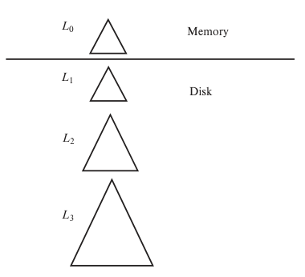
图 14.26 包含三个层级的日志结构合并树。Memory 为内存，Disk 为磁盘。
若树 L₁ 为空，就将整棵内存树 L₀ 写入磁盘，形成初始的树 L₁。若 L₁ 不为空，则按键值递增顺序扫描 L₀ 的叶子层，将其中的条目与 L₁ 的叶子层条目合并，L₁ 也按键值递增顺序扫描。利用合并后的条目，通过自底向上的构建过程创建一棵新 B⁺树，再用它替换原来的 L₁。在这两种情况下，将 L₀ 的条目转移到 L₁ 后，都会删除 L₀ 中的所有条目，以及原有的 L₁（若存在）。随后便可向已清空的内存树 L₀ 继续插入。
注意，系统会把原 L₁ 树叶子层的全部条目复制到新树中，包括那些没有发生任何更新的叶节点中的条目，而非更新原有的 L₁ 树节点。这样做有以下好处。
- 新树的叶子按顺序存放，在后续合并时可避免随机 I/O。
- 叶子都是满的，避免了页分裂后叶子可能只占用部分空间所产生的开销。
不过，上述 LSM 结构也有代价：每次把一组条目从 L₀ 转移到 L₁ 时，都要复制整棵树的内容。可采用以下两种技术之一来降低这一开销。
- 使用多个层级，让 Lᵢ₊₁ 层树的最大容量为 Lᵢ 层树最大容量的 k 倍。这样，每条记录在某一层最多写入 k 次。层数与 logk(I/M) 成正比，其中 I 为条目总数，M 为内存树 L₀ 能容纳的条目数。
- 除 L₀ 外，每层最多允许有 b 棵树，而非仅有一棵。将 L₀ 树写入磁盘时，创建一棵新的 L₁ 树，不将它与已有 L₁ 树合并。当这样的 L₁ 树达到 b 棵时，才把它们合并成一棵新的 L₂ 树。类似地，Lᵢ 层有 b 棵树时，就将它们合并成一棵新的 Lᵢ₊₁ 树。
这种 LSM 树变体称为分级合并索引（stepped-merge index）。与每层只有一棵树的方案相比，分级合并索引显著降低了插入开销，但由于查询可能需要搜索多棵树，查询开销也可能增大。第 24.1 节介绍的布隆过滤器（Bloom filter）是一种基于位图的结构，能够高效判断某个搜索键不在某棵树中，从而减少查找次数。布隆过滤器占用的空间很少，却能有效降低查询开销。
第 24.2 节将详细介绍 LSM 树的这些变体。
到目前为止，我们只介绍了插入和查找。删除采用另一种处理方式：删除时，插入一个新的删除条目，指明要删除哪个索引条目，而不直接找到并删除该索引条目。插入删除条目的过程与插入普通索引条目的过程完全相同。
不过，查找需要多做一步。如前所述，查找会从所有树中取出条目，并按键值顺序合并。如果某个条目有对应的删除条目，两者的键值就相同。因此，查找会同时找到该键的删除条目和应被删除的原条目。一旦找到删除条目，就过滤掉待删除的条目，不将它作为查找结果返回。
合并树时，若一棵树包含某个条目，另一棵树包含与之对应的删除条目，合并过程就会把二者匹配起来，因为它们具有相同的键，然后将二者一并丢弃。
更新的处理方式与删除类似，通过插入更新条目实现。查找需要将更新条目与原条目匹配，并返回最新值。真正应用更新是在合并时：当一棵树包含某个条目、另一棵树包含对应的更新条目时，合并过程会找到这两个键相同的记录，执行更新，再丢弃更新条目。
LSM 树最初用于减少磁盘的写入和寻道开销。基于闪存的 SSD 不需要寻道，随机 I/O 操作的开销相对较低，因此 LSM 树变体避免随机 I/O 的优势，在 SSD 上并不十分突出。
不过，回忆一下，闪存不允许原地更新，即使只向页中写入一个字节，也必须将整个页重写到新的物理位置；该页原来的位置最终还必须擦除，而擦除的代价相对较高。与传统 B⁺树相比，LSM 树变体减少了写入次数，在 SSD 上使用时可以带来显著的性能收益。
Google 的 BigTable 系统及其开源实现 Apache HBase 使用了与分级合并索引类似的 LSM 树变体，每层可有多棵树。这些系统建立在分布式文件系统之上，文件系统允许向文件追加内容，但不支持更新已有数据。LSM 树不执行原地更新，因而很适合这些系统。
此后，Apache Cassandra、Apache AsterixDB 和 MongoDB 等许多大数据存储系统加入了对 LSM 树的支持，其中多数实现采用每层多棵树的版本。MySQL（通过 MyRocks 存储引擎），以及嵌入式数据库系统 SQLite4 和 LevelDB，也支持 LSM 树。
14.8.2 缓冲树
缓冲树是日志结构合并树之外的另一种方法。其主要思路是，为 B⁺树的每个内部节点（包括根节点）关联一个缓冲区，如图 14.27 所示。下面先概述插入与查找的处理方式，再介绍删除与更新。
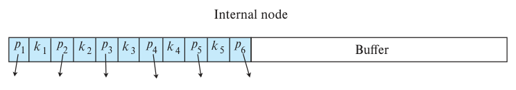
图 14.27 缓冲树内部节点的结构。Buffer 为缓冲区，Internal node 为内部节点。
向缓冲树插入一条索引记录时，先将它放入根节点的缓冲区，无须沿树遍历到叶子。若缓冲区已满，就把其中的每条索引记录向下推送一层，送入相应的子节点。若子节点是内部节点，就把索引记录加入该子节点的缓冲区；若这个缓冲区也满了，则以同样方式将其中的全部记录向下推送。向下推送前，先按搜索键对缓冲区中的所有记录排序。若子节点是叶节点，就按通常的方法把索引记录插入叶子。若插入导致叶节点过满，就按普通 B⁺树的方法分裂该节点，分裂可能继续向父节点传播。分裂过满的内部节点时，除通常步骤外，还要分裂缓冲区，依据缓冲条目的键值，将它们分配给分裂后的两个节点。
查找按通常方式遍历 B⁺树结构，找到包含匹配查找键记录的叶子。不过还需多做一步：每经过一个内部节点，都必须检查其缓冲区，看其中是否有匹配查找键的记录。范围查找与普通 B⁺树中的方法相同，但还必须检查所有被访问叶节点上方各内部节点的缓冲区。
假定内部节点缓冲区可容纳的记录数，是其子节点数的 k 倍。那么，平均每次会向每个子节点推送 k 条记录，无论子节点是内部节点还是叶节点。推送前排序，保证了这些记录能够连续推送。缓冲树在插入方面的好处是：从存储设备访问子节点、再把更新后的节点写回的开销，平均可以摊分给 k 条记录。只要 k 足够大，与普通 B⁺树的插入相比，就能节省相当多的开销。
删除和更新可以采用与 LSM 树类似的方法，通过删除条目或更新条目来处理。也可采用普通 B⁺树算法，但这样每次删除或更新的 I/O 开销，可能高于使用删除条目或更新条目的方法。
在 I/O 操作次数的最坏情况复杂度界上，缓冲树优于 LSM 树的各种变体。在读取开销方面，缓冲树明显快于 LSM 树。不过，缓冲树的写操作涉及随机 I/O，需要更多寻道；LSM 树变体则执行顺序 I/O。对于磁盘存储，寻道的高开销使缓冲树在写密集型工作负载上的表现弱于 LSM 树。因此，数据存储在磁盘上的写密集型工作负载更广泛地采用了 LSM 树。不过，SSD 上的随机 I/O 十分高效，而缓冲树的总写入次数通常比 LSM 树少，因此缓冲树在 SSD 上可以提供更好的写入性能。多种为闪存设计的索引结构，都采用了缓冲树引入的缓冲思想。
缓冲树还有一个好处：为内部节点关联缓冲区以减少写入次数的思路，可以应用于任何树形索引。例如，对于 R 树等空间索引（见第 14.10.1 节），以及其他不适用排序与自底向上构建的索引，缓冲已经被用于支持批量装载。
PostgreSQL 的通用搜索树（Generalized Search Tree，GiST）索引结构实现了缓冲树。GiST 索引允许执行用户定义的代码，实现节点上的搜索、更新和分裂操作，已被用于实现 R 树及其他空间索引结构。
14.9 位图索引
位图索引（bitmap index）是一类专门设计的索引，便于执行涉及多个键的查询，尽管每个位图索引本身建立在单个键上。本节介绍其主要特性，第 24.3 节提供更详细的讨论。
使用位图索引时，必须对关系中的记录顺序编号，例如从 0 开始。给定编号 n，应当能够容易地取出编号为 n 的记录。若记录长度固定，并存放在文件中连续分配的块上，这一点就很容易实现：可以直接把记录编号换算成块号和记录在块内的编号。
考虑某个关系，其中一个属性只有少量可能的取值，例如 2～20 个。以关系 instructor_info 为例，除 ID 属性外，它还有 gender 属性，只能取 m（男性）或 f（女性）。假定该关系还有 income_level 属性，存储收入等级，把收入分为五档：L1：0～9999；L2：10,000～19,999；L3：20,000～39,999；L4：40,000～74,999；L5：75,000～∞。原始数据的取值可能很多，但数据分析人员把它们划分为少量区间，以简化数据分析。图 14.28 左侧给出了该关系的一个实例。
位图（bitmap）就是一个位数组。在最简单的形式下，关系 r 的属性 A 上的位图索引，为 A 的每个可能值分别保存一个位图。每个位图的位数等于关系中的记录数。对于值 vⱼ 的位图，若编号为 i 的记录在属性 A 上的值为 vⱼ，就将第 i 位设为 1，其余位均设为 0。
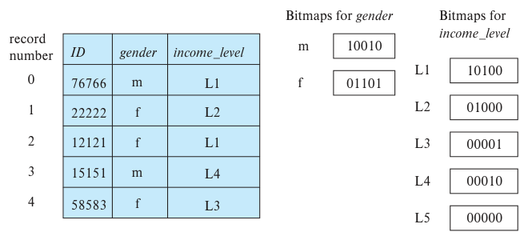
图 14.28 关系 instructor_info 上的位图索引。record number 为记录编号，Bitmaps for gender 和 Bitmaps for income_level 分别是 gender 与 income_level 的位图。
在这个例子中，值 m 和 f 各有一个位图。若编号为 i 的记录的 gender 值为 m，则 m 位图的第 i 位为 1，其余位均为 0。同样，f 位图中，gender 属性为 f 的记录所对应的位为 1，其余位为 0。图 14.28 展示了图中 instructor_info 关系实例在 gender 和 income_level 属性上的位图索引。
现在来看位图什么时候有用。取出所有值为 m（或 f）的记录，最简单的方法就是读取关系的全部记录，并选出值为 m（或相应地为 f）的记录。位图索引并不能有效加快这种选择。虽然它允许我们只读取某一性别的记录，但实际仍很可能需要读取该文件的每一个磁盘块。
事实上，位图索引主要在对多个键同时进行选择时才有用。假定除 gender 上的位图索引之外，我们还为前述 income_level 属性创建了位图索引。
现在考虑一个查询，选择收入在 10,000～19,999 之间的女性。这个查询可写为：
select *
from instructor_info
where gender = 'f' and income_level = 'L2';
执行这一选择时，先取出 gender 值 f 的位图，以及 income_level 值 L2 的位图，再求两个位图的交，即逐位逻辑与。换言之，计算一个新位图：只有两个输入位图的第 i 位都为 1 时，新位图的第 i 位才为 1，否则为 0。在图 14.28 的例子中，gender = f 的位图为 01101，income_level = L2 的位图为 01000，两者相交得到 01000。
由于第一个属性有两个可能值，第二个属性有五个可能值，我们预计平均约有十分之一的记录满足这两个属性上的组合条件。如果还有其他条件，满足全部条件的记录比例很可能相当小。系统便可找出交集位图中所有值为 1 的位，并取出对应记录，得到查询结果。如果这一比例很大，扫描整个关系仍是开销更低的选择。
第 24.3 节进一步介绍位图索引，包括如何高效实现聚集运算、如何加速位图运算，以及将 B⁺树与位图结合的混合索引。
14.10 空间数据与时态数据的索引
散列索引、B⁺树等传统索引结构，不适合为空间数据建立索引，因为空间数据通常具有两个或更多维度。类似地，当元组关联着时间区间，而查询可以指定时间点或时间区间时，传统索引结构的性能也可能很差。
14.10.1 空间数据索引
本节概述空间数据的索引技术，更多细节见第 24.4 节。空间数据是描述二维或更高维空间中的点或区域的数据。例如，以（纬度，经度）二元组确定的餐馆位置，就是一种空间数据。类似地，农场或湖泊的空间范围可以用多边形表示，每个顶点由一个（纬度，经度）二元组确定。
空间数据查询有多种形式，需要索引提供高效支持。若查询精确指定了一个（纬度，经度）坐标对，要找出该位置的餐馆，可以在复合属性（纬度，经度）上创建 B⁺树。但这样的 B⁺树索引无法高效回答以下查询：找出以用户位置为中心、半径 500 米内的全部餐馆，其中用户位置也由（纬度，经度）坐标对表示。它也无法高效回答查找某个矩形区域内全部餐馆的查询。这两类都属于范围查询（range query），用于取出指定区域中的对象。这样的索引同样无法高效回答查找离指定位置最近的餐馆的查询；后者是最近邻查询（nearest neighbor query）的例子。
空间索引旨在支持各种空间查询。其中，范围查询和最近邻查询应用广泛，受到较多关注。
要理解如何为二维或更高维空间数据建立索引，先来看一维数据中点的索引。二叉树、B⁺树等树结构，通过不断把空间划分为更小的部分来工作。例如，二叉树中的每个内部节点把一个一维区间分为两部分。落在左侧分区的点进入左子树，落在右侧分区的点进入右子树。在平衡二叉树中，划分位置的选择使子树中存储的点大约各有一半落入两个分区。类似地，B⁺树的每一层把一个一维区间分成多个部分。
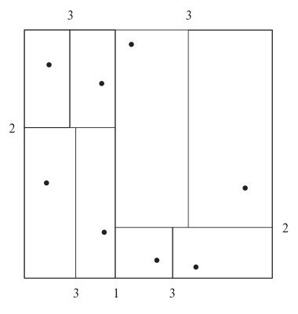
图 14.29 k-d 树对空间的划分。
利用这一思路，也可以构建用于二维乃至更高维空间的树结构。k-d 树是较早用于多维索引的一种结构。k-d 树的每一层都将空间一分为二：树的顶层节点沿一个维度划分，下一层节点沿另一个维度划分，以此类推，循环使用各维度。划分时，在每个节点处，子树存储的点大约有一半落在一侧，另一半落在另一侧。当某个节点的点数低于给定的上限时，停止划分。
图 14.29 给出二维空间中的一组点，以及它们的 k-d 树表示，其中叶节点允许的最大点数设为 1。除最外侧边框外，图中的每条线都对应 k-d 树中的一个节点。线旁的数字表示对应节点所在的树层级。
矩形范围查询查找指定矩形区域内的点，可用 k-d 树高效回答。这类查询为每个维度指定一个区间。例如，可以要求查找所有 x 坐标在 50～80 之间、y 坐标在 40～70 之间的点。回忆一下，每个内部节点沿一个维度划分空间，这与 B⁺树类似。从根节点开始，可按以下递归过程进行范围搜索。
- 若当前节点为内部节点，假设它在某个维度（例如 x）的位置 xᵢ 处划分空间。左子树中条目的 x 值小于 xᵢ，右子树中条目的 x 值大于或等于 xᵢ。若查询范围包含 xᵢ，就对两个子节点都递归搜索；若查询范围在 xᵢ 左侧，就只对左子节点递归搜索；否则只搜索右子树。
- 若当前节点为叶子，则取出所有落在查询范围内的条目。
最近邻搜索更复杂，这里不展开介绍，但 k-d 树也能够高效回答最近邻查询。
k-d-B 树扩展了 k-d 树，允许每个内部节点有多个子节点，以降低树高，其方式与 B 树扩展二叉树类似。k-d-B 树比 k-d 树更适合辅助存储器。上述范围搜索容易扩展到 k-d-B 树，最近邻查询也可以利用 k-d-B 树高效完成。
空间数据还有许多其他索引结构。四叉树（quadtree）在每个节点将二维空间划分为四个象限，而不每次只沿一个维度划分数据。详见第 24.4.1 节。
为线段、矩形和其他多边形等空间区域建立索引，会带来新的问题。k-d 树和四叉树都有针对这一任务的扩展。其主要思路是：若线段或多边形跨过分割线，就沿该线将其切分，并在包含各片段的每棵子树中分别表示。一个线段或多边形出现多次，会降低存储效率，也会降低查询效率。
一种称为 R 树的存储结构，适合为线段、矩形和其他多边形等跨越空间区域的对象建立索引，也支持点对象。R 树是一种平衡树结构，被索引的对象存储在叶节点中，这与 B⁺树很相似。不过，每个树节点关联的是矩形包围盒（bounding box），而非取值区间。叶节点的包围盒，是包含该叶节点中全部对象、边与坐标轴平行的最小矩形。类似地，内部节点的包围盒，是包含其所有子节点包围盒、边与坐标轴平行的最小矩形。一个对象（如多边形）的包围盒，也定义为包含该对象、边与坐标轴平行的最小矩形。
每个内部节点存储子节点的包围盒，以及指向子节点的指针。每个叶节点存储被索引的对象。
图 14.30 给出一组矩形的例子，矩形用实线绘制，表示这组矩形的 R 树各节点的包围盒用虚线绘制。为使图示清楚，包围盒内部留出了额外空间。实际的盒子会更小，并紧贴所包含的对象；也就是说，包围盒 B 的每条边，都会接触至少一个包含在 B 中的对象或包围盒。
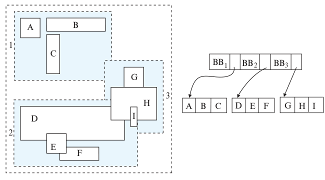
图 14.30 一棵 R 树。
R 树本身画在图 14.30 的右侧。图中用 BBᵢ 表示包围盒 i 的坐标。R 树的更多细节，包括如何用 R 树回答范围查询，见第 24.4.2 节。
有些存储多边形和线段的结构，如 R* 树和区间树，处理方式不同；R 树为每个对象只存储一个副本，并且容易保证每个节点至少半满。不过，由于可能必须搜索多条路径，它的查询速度可能比某些替代结构慢。凭借较高的存储效率，以及与 B 树的相似性，R 树及其变体已广泛用于支持空间数据的数据库系统。
14.10.2 时态数据索引
如第 7.10 节所述，时态数据是关联着时间段的数据。元组关联的时间段表示该元组有效的时间。例如，某个课程标识对应的课程名称可能在某一时刻改变。因此，一个课程标识在给定时间区间内对应某个名称，此后，同一课程标识又对应另一个名称。可以在 course 关系中使用两个或更多元组建模：这些元组的 course_id 相同，title 值不同，各自有自己的有效时间区间。
时间区间有开始时间和结束时间，还会指明区间从开始时间那一刻起生效，还是从该时刻之后生效，即区间在开始时间处为闭区间还是开区间。同样，时间区间也会指明在结束时间处是闭的还是开的。若要表示某个元组当前有效，直到下次更新为止，概念上将结束时间设为无穷大，可以用足够大的时间值表示，例如 9999-12-31 的午夜。
一般来说，某个事实的有效期不一定只包含一个时间区间。例如，学生某学年在大学注册，下一年休学，再下一年重新注册。这个学生在大学的注册有效期显然不止一个时间区间。不过，任何有效期都可以用多个区间表示；因此，具有任意有效期的元组，都可以表示为多个元组，每个元组的有效期分别是单个时间区间。下面对时态数据建模时，只考虑时间区间。
假设给定属性 a 的一个值 v，以及一个时间点 t₁，要取出该时刻的元组值。可以在 a 上创建索引，用它取出属性 a 值为 v 的全部元组。如果这个搜索键值对应的时间区间数量很少，这样的索引可能已够用；但一般来说，它可能取出许多时间区间并不包含 t₁ 的元组。
更好的方法是使用 R 树等空间索引，把被索引元组视为二维对象：一维是被索引属性 a，另一维是时间。这样，元组构成一条线段：在 a 这一维上的值为 v，在时间维上的区间为元组的有效时间区间。
使用 R 树等空间索引时，有个问题会增加处理难度：时间区间的结束时间可能为无穷大，或用一个很大的值表示，而空间索引通常假定包围盒是有限的；包围盒很大时，其性能可能很差。可以采用以下方式解决这一问题。
- 把所有当前元组（即结束时间为无穷大的元组，无穷大也许用一个很大的时间值表示），与结束时间有限的元组分别建立索引。当前元组的索引可以是在 (a, start_time) 上的 B⁺树索引，其中 a 是被索引属性，start_time 是开始时间；非当前元组的索引则采用 R 树等空间索引。
- 在时间点 tᵢ 查找键值 v，需要搜索两个索引。在当前元组索引上，搜索 a = v 且 start_ts ≤ tᵢ 的元组，用简单的范围查询即可完成。指定时间范围的查询也可类似处理。〔译注：原文在本段将开始时间字段写作 start_ts，前文写作 start_time；两者指同一时间属性。〕
也可以采用专门针对单维区间设计的索引，如区间 B⁺树（interval B⁺-tree），不必使用为多维数据设计的空间索引。这类索引提供的复杂度保证比 R 树更好。不过，大多数数据库实现认为，复用 R 树索引比再为时间区间实现一种索引更简单。
回忆一下，在时态数据中，只要主键值相同的元组所关联的时间区间互不重叠，多个元组就可以具有相同的主键值。在主键属性上建立时态索引，可以在插入新元组或更新已有元组的有效时间区间时，高效判断是否违反时态主键约束。
14.11 小结
- 许多查询只访问文件中很小一部分记录。为减少搜索这些记录的开销，可以为存储数据库的文件构建索引。
- 索引有稠密索引和稀疏索引两种。稠密索引为每个搜索键值保存条目，稀疏索引只为部分搜索键值保存条目。
- 若搜索键的排序顺序与关系的存储排序顺序一致，该搜索键上的索引称为聚簇索引。其他索引称为非聚簇索引或辅助索引。辅助索引可提高使用其他搜索键的查询性能，但会增加数据库修改的开销。
- 索引顺序文件是数据库系统中最早采用的索引方案之一。为便于按搜索键顺序快速检索，记录按顺序存储，顺序之外的记录则用链连接；另外使用索引结构支持快速随机访问。
- 索引顺序文件组织的主要缺点是，随着文件增长，性能会逐渐下降。B⁺树索引可以克服这一缺点。
- B⁺树索引是一棵平衡树，从根到每个叶子的路径长度都相同。若每个非叶节点存储 N 个指针，B⁺树的高度就与关系记录数以 N 为底的对数成正比；N 通常约为 50 或 100。B⁺树比 AVL 树等平衡二叉树结构矮得多，因此定位记录所需的磁盘访问次数更少。
- B⁺树查找简单而高效。插入和删除稍复杂一些，但仍然高效。若每个非叶节点存储 N 个指针，查找、插入和删除所需的操作数，都与关系记录数以 N 为底的对数成正比。
- B⁺树既可以为存放记录的文件建立索引，也可以用于组织文件中的记录。
- B 树索引与 B⁺树索引相似。B 树的主要优点是消除了搜索键值的冗余存储；主要缺点是整体较复杂，而且在节点大小给定时，扇出较小。实践中，系统设计者几乎都更倾向于选择 B⁺树索引。
- 散列是一种广泛用于构建索引的技术，适用于主存系统，也适用于基于磁盘的系统。
- B⁺树等有序索引可用于单属性等值条件的选择。若选择条件涉及多个属性，可以对从多个索引取出的记录标识符求交集。
- 对每秒需要支持大量随机写入或插入的应用，基本 B⁺树结构并不理想。为处理高写入或插入速率的工作负载，人们提出了日志结构合并树、缓冲树等替代索引结构。
- 对只有很少不同取值的属性，位图索引提供了非常紧凑的索引表示。位图上的求交操作极快，适合支持多属性查询。
- R 树是 B 树的多维扩展；它及 R⁺树、R* 树等变体已广泛用于空间数据库。四叉树等按规则方式划分空间的索引结构，有助于处理空间连接查询。
- 时态数据有多种索引技术，包括使用空间索引，以及专用的区间 B⁺树索引。
复习术语
- 索引类型：有序索引；散列索引。
- 评价因素：访问类型；访问时间；插入时间；删除时间；空间开销。
- 搜索键。
- 有序索引：有序索引；聚簇索引；主索引；非聚簇索引；辅助索引；索引顺序文件。
- 索引条目；索引记录；稠密索引；稀疏索引；多级索引；非唯一搜索键；复合搜索键。
- B⁺树索引文件：平衡树；叶节点；非叶节点；内部节点；范围查询；节点分裂；节点合并；指针重新分配；唯一化属性。
- B⁺树扩展：前缀压缩；批量装载；自底向上构建 B⁺树。
- B 树索引。
- 散列文件组织：散列函数；桶；溢出链；封闭寻址；封闭散列；桶溢出；偏斜；静态散列；动态散列。
- 多键访问；覆盖索引。
- 写优化索引结构：日志结构合并（LSM）树；分级合并索引；缓冲树。
- 位图索引；位图交集。
- 空间数据索引：范围查询；最近邻查询；k-d 树；k-d-B 树；四叉树；R 树；包围盒。
- 时态索引；时间区间；闭区间；开区间。
实践习题
14.1 索引能加快查询处理，但通常不宜为每个可能成为搜索键的属性，以及每种属性组合都创建索引。请解释原因。
14.2 一般来说，能否在同一个关系上，针对不同搜索键建立两个聚簇索引？解释你的答案。
14.3 为以下键值集合构造 B⁺树：
(2, 3, 5, 7, 11, 17, 19, 23, 29, 31)
假定树最初为空，按升序加入各值。分别在一个节点可容纳以下数量指针时构造 B⁺树。
a. 4 个。
b. 6 个。
c. 8 个。
14.4 对习题 14.3 中的每棵 B⁺树，依次执行以下操作，给出每步操作后的树形结构。
a. 插入 9。
b. 插入 10。
c. 插入 8。
d. 删除 23。
e. 删除 19。
14.5 考虑原书第 651 页描述的 B⁺树改进重分配方案（见第 14.4.1 节）。以 n 为变量，树的预期高度是多少？
14.6 给出 B⁺树函数 findRangeIterator() 的伪代码。它与 findRange() 类似，但返回第 14.3.2 节所述的迭代器对象。还需给出迭代器类的伪代码，包括迭代器对象中的变量，以及 next() 方法。
14.7 若按排序顺序插入索引条目，B⁺树中每个叶节点的占用率会是多少？解释原因。
14.8 假设关系 r 有 nᵣ 个元组，要在其上构建一个辅助 B⁺树索引。
a. 给出逐条插入记录来构建 B⁺树索引的开销公式。假定每块平均存储 f 个条目，而且叶子以上的所有树层级都在内存中。
b. 假定一次随机磁盘访问耗时 10 毫秒，在一个包含 1000 万条记录的关系上构建索引，需要多少开销？
c. 给出第 14.4.4 节概述的自底向上构建 B⁺树的伪代码。可以假定已有一个能够高效排序大文件的函数。
14.9 在执行一系列插入后，B⁺树文件组织中的叶节点可能失去物理存储的顺序性。
a. 解释为什么可能失去顺序性。
b. 为减少顺序扫描中的寻道次数，许多数据库按包含 n 个块的区段分配叶子页，其中 n 是一个足够大的合理数值。分配 B⁺树的第一个叶子时，只使用一个 n 块单元中的一块，其余页空闲。若某页分裂，且所在 n 块单元还有空闲页，就用该空间存放新页。若该单元已满，则再分配一个 n 块单元，将前 n/2 个叶子页放在一个单元中，其余叶子页放在第二个单元中。为简化讨论，假定没有删除操作。
i. 在第一个 n 块单元填满后，若没有删除操作，所分配空间的最坏情况占用率是多少？
ii. 分配到同一 n 块单元中的叶节点，有没有可能在逻辑顺序上不连续？也就是说，有没有可能两个叶节点被分配到同一单元，而位于它们之间的另一个叶节点却被分配到不同单元？
iii. 合理假定缓冲空间足以容纳一个 n 页单元，那么在最坏情况下，扫描 B⁺树整个叶子层需要多少次寻道？与每次只为叶子页分配一块时的最坏情况比较。
iv. 向兄弟节点重分配值以提高空间利用率的技术，与上述叶子块分配方案结合使用时，可能更高效。解释原因。
14.10 假设给定一个数据库模式，以及一些频繁执行的查询。如何利用这些信息决定应创建哪些索引？
14.11 在 LSM 树或分级合并索引等写优化树中，只有某层已满时，才将该层条目合并到下一层。请提出一种调整此策略的方法，以便在有大量读取、没有更新的时段提高读取性能。
14.12 与 LSM 树相比，缓冲树有哪些取舍？
14.13 考虑图 14.1 中的 instructor 关系。
a. 在 salary 属性上构建位图索引，将工资值划分为四个区间：低于 50,000；50,000 至低于 60,000；60,000 至低于 70,000；70,000 及以上。
b. 考虑一个查询，要求查找 Finance 系中工资至少为 80,000 的所有教师。概述回答该查询的步骤，给出为回答查询构造的中间位图和最终位图。
14.14 假定一个关系包含餐馆的 x、y 坐标以及名称，并且查询只会采用以下形式：指定一个点，询问该位置是否恰好有一家餐馆。R 树和 B 树中，哪种索引更合适？为什么？
14.15 假定一个空间数据库支持圆形区域查询，但不支持最近邻查询。描述一种利用多次区域查询来寻找最近邻的算法。
习题
14.16 什么时候使用稠密索引比使用稀疏索引更合适？解释你的答案。
14.17 聚簇索引和辅助索引有什么区别？
14.18 对习题 14.3 中的每棵 B⁺树，给出执行以下查询的步骤。
a. 查找搜索键值为 11 的记录。
b. 查找搜索键值在 7 到 17 之间的记录，包括两个端点。
14.19 第 14.3.5 节解决搜索键不唯一问题的方法，在搜索键中增加了一个属性。这个变化可能如何影响 B⁺树的高度？
14.20 假定关系 r(A, B, C) 上有一个搜索键为 (A, B) 的 B⁺树索引。
a. 使用该索引查找满足 10 < A < 50 的记录，最坏情况开销是多少？用取出的记录数 n₁ 和树高 h 表示。
b. 使用该索引查找满足 10 < A < 50 ∧ 5 < B < 10 的记录，最坏情况开销是多少？用满足这一选择条件的记录数 n₂，以及上面定义的 n₁ 和 h 表示。
c. n₁ 和 n₂ 满足什么条件时，使用该索引查找满足 10 < A < 50 ∧ 5 < B < 10 的记录是高效的？
14.21 假定需要为大量姓名创建 B⁺树索引，姓名的最大长度可能较大，例如 40 个字符，平均长度也较大，例如 10 个字符。解释如何利用前缀压缩，使非叶节点的平均扇出尽可能大。
14.22 假定关系采用 B⁺树文件组织存储，辅助索引中的记录标识符是指向磁盘记录的指针。
a. 若文件组织发生节点分裂，会对辅助索引产生什么影响？
b. 更新某个辅助索引中所有受影响记录的开销是多少？
c. 使用文件组织的搜索键作为逻辑记录标识符，如何解决这一问题？
d. 使用这种逻辑记录标识符会带来什么额外开销？
14.23 与 B⁺树索引相比，写优化索引有哪些取舍？
14.24 存在位图为每个记录位置保存一个位：若该位置存在记录，位值为 1；若该位置没有记录，例如记录已经删除，位值为 0。说明如何从其他位图计算出存在位图。请使用一个表示 null 值的位图，保证所用方法在存在 null 值时仍然有效。
14.25 能够为空间区间建立索引的空间索引，从概念上说，也能把有效时间视为时间区间，为时态数据建立索引。这样做有什么问题？如何解决？
14.26 关系的某些属性可能包含敏感数据，要求以加密形式存储。数据加密会怎样影响索引方案？它会怎样影响那些试图按排序顺序存储数据的方案？
延伸阅读
B 树索引最早由 [Bayer and McCreight (1972)] 和 [Bayer (1972)] 提出。[Comer (1979)]、[Bayer and Unterauer (1977)] 和 [Knuth (1973)] 讨论了 B⁺树。[Gray and Reuter (1993)] 对 B⁺树实现中的问题作了清楚的介绍。
[O’Neil et al. (1996)] 提出了日志结构合并（LSM）树，[Jagadish et al. (1997)] 提出了分级合并树。[Arge (2003)] 介绍了缓冲树。[Vitter (2001)] 全面综述了外存数据结构与算法。
[O’Neil and Quass (1997)] 描述了位图索引。位图索引最早用于 AS 400 平台上的 IBM Model 204 文件管理器，能够大幅加速某些类型的查询，如今已在多数数据库系统中实现。
[Samet (2006)] 与 [Shekhar and Chawla (2003)] 以教材形式介绍了空间数据结构和空间数据库。[Bentley (1975)] 描述了 k-d 树，[Robinson (1981)] 描述了 k-d-B 树。R 树最早由 [Guttman (1984)] 提出。
参考文献
[Arge (2003)] L. Arge, “The Buffer Tree: A Technique for Designing Batched External Data Structures”, Algorithmica, Volume 37, Number 1 (2003), pages 1–24.
[Bayer (1972)] R. Bayer, “Symmetric Binary B-trees: Data Structure and Maintenance Algorithms”, Acta Informatica, Volume 1, Number 4 (1972), pages 290–306.
[Bayer and McCreight (1972)] R. Bayer and E. M. McCreight, “Organization and Maintenance of Large Ordered Indices”, Acta Informatica, Volume 1, Number 3 (1972), pages 173– 189.
[Bayer and Unterauer (1977)] R. Bayer and K. Unterauer, “Prefix B-trees”, ACM Transactions on Database Systems, Volume 2, Number 1 (1977), pages 11–26.
[Bentley (1975)] J. L. Bentley, “Multidimensional Binary Search Trees Used for Associative Searching”, Communications of the ACM, Volume 18, Number 9 (1975), pages 509–517.
[Comer (1979)] D. Comer, “The Ubiquitous B-tree”, ACM Computing Surveys, Volume 11, Number 2 (1979), pages 121–137.
[Gray and Reuter (1993)] J. Gray and A. Reuter, Transaction Processing: Concepts and Techniques, Morgan Kaufmann (1993).
[Guttman (1984)] A. Guttman, “R-Trees: A Dynamic Index Structure for Spatial Searching”, In Proc. of the ACM SIGMOD Conf. on Management of Data (1984), pages 47–57.
[Jagadish et al. (1997)] H. V. Jagadish, P. P. S. Narayan, S. Seshadri, S. Sudarshan, and R. Kanneganti, “Incremental Organization for Data Recording and Warehousing”, In Proceedings of the 23rd International Conference on Very Large Data Bases, VLDB ’97 (1997), pages 16–25.
[Knuth (1973)] D. E. Knuth, The Art of Computer Programming, Volume 3, Addison Wesley, Sorting and Searching (1973).
[O’Neil and Quass (1997)] P. O’Neil and D. Quass, “Improved Query Performance with Variant Indexes”, In Proc. of the ACM SIGMOD Conf. on Management of Data (1997), pages 38–49.
[O’Neil et al. (1996)] P. O’Neil, E. Cheng, D. Gawlick, and E. O’Neil, “The Log-structured Merge-tree (LSM-tree)”, Acta Inf., Volume 33, Number 4 (1996), pages 351–385.
[Robinson (1981)] J. Robinson, “The k-d-B Tree: A Search Structure for Large Multidimensional Indexes”, In Proc. of the ACM SIGMOD Conf. on Management of Data (1981), pages 10–18.
[Samet (2006)] H. Samet, Foundations of Multidimensional and Metric Data Structures, Morgan Kaufmann (2006).
[Shekhar and Chawla (2003)] S. Shekhar and S. Chawla, Spatial Databases: A TOUR, Pearson (2003).
[Vitter (2001)] J. S. Vitter, “External Memory Algorithms and Data Structures: Dealing with Massive Data”, ACM Computing Surveys, Volume 33, (2001), pages 209–271.
图片来源
本章开头的帆船照片：© Pavel Nesvadba/Shutterstock。